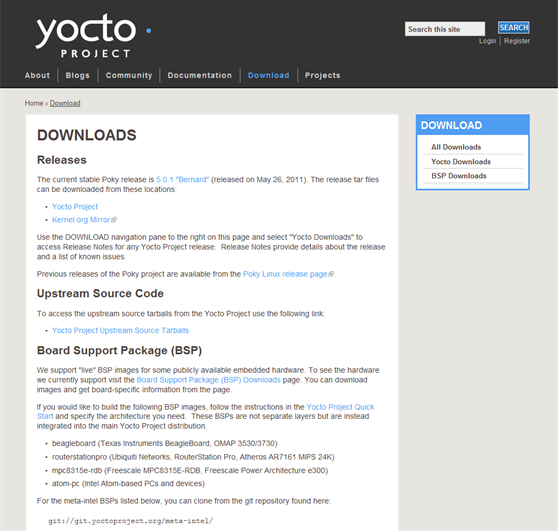

Copyright © 2010-2013 Linux Foundation
Permission is granted to copy, distribute and/or modify this document under the terms of the Creative Commons Attribution-Share Alike 2.0 UK: England & Wales as published by Creative Commons.
Note
Due to production processes, there could be differences between the Yocto Project documentation bundled in the release tarball and the Yocto Project Development Manual on the Yocto Project website. For the latest version of this manual, see the manual on the website.| Revision History | |
|---|---|
| Revision 1.1 | 6 October 2011 |
| The initial document released with the Yocto Project 1.1 Release. | |
| Revision 1.2 | April 2012 |
| Released with the Yocto Project 1.2 Release. | |
| Revision 1.3 | October 2012 |
| Released with the Yocto Project 1.3 Release. | |
| Revision 1.4 | Sometime in 2013 |
| Released with the Yocto Project 1.4 Release. | |
Table of Contents
- 1. The Yocto Project Development Manual
- 2. Getting Started with the Yocto Project
- 3. The Yocto Project Open Source Development Environment
- 4. Common Development Models
- 5. Common Tasks
- 5.1. Understanding and Creating Layers
- 5.2. Customizing Images
- 5.3. Adding a Package
- 5.4. Adding a New Machine
- 5.5. Combining Multiple Versions of Library Files into One Image
- 5.6. Configuring the Kernel
- 5.7. Patching the Kernel
- 5.8. Updating Existing Images
- 5.9. Working with Packages
- 5.10. Building Software from an External Source
- 5.11. Excluding Recipes From the Build
- 5.12. Using an External SCM
- 5.13. Debugging With the GNU Project Debugger (GDB) Remotely
- 5.14. Profiling with OProfile
- 5.15. Maintaining Open Source License Compliance During Your Product's Lifecycle
Table of Contents
Welcome to the Yocto Project Development Manual! This manual gives you an idea of how to use the Yocto Project to develop embedded Linux images and user-space applications to run on targeted devices. Reading this manual gives you an overview of image, kernel, and user-space application development using the Yocto Project. Because much of the information in this manual is general, it contains many references to other sources where you can find more detail. For example, detailed information on Git, repositories and open source in general can be found in many places. Another example is how to get set up to use the Yocto Project, which our Yocto Project Quick Start covers.
The Yocto Project Development Manual, however, does provide detailed examples on how to change the kernel source code, reconfigure the kernel, and develop an application using the popular Eclipse™ IDE.
The following list describes what you can get from this guide:
Information that lets you get set up to develop using the Yocto Project.
Information to help developers who are new to the open source environment and to the distributed revision control system Git, which the Yocto Project uses.
An understanding of common end-to-end development models and tasks.
Development case overviews for both system development and user-space applications.
An overview and understanding of the emulation environment used with the Yocto Project - the Quick EMUlator (QEMU).
An understanding of basic kernel architecture and concepts.
Many references to other sources of related information.
This manual will not give you the following:
Step-by-step instructions if those instructions exist in other Yocto Project documentation. For example, the Yocto Project Application Developer's Guide contains detailed instruction on how to run the Installing the ADT and Toolchains, which is used to set up a cross-development environment.
Reference material. This type of material resides in an appropriate reference manual. For example, system variables are documented in the Yocto Project Reference Manual.
Detailed public information that is not specific to the Yocto Project. For example, exhaustive information on how to use Git is covered better through the Internet than in this manual.
Because this manual presents overview information for many different topics, you will need to supplement it with other information. The following list presents other sources of information you might find helpful:
The Yocto Project Website: The home page for the Yocto Project provides lots of information on the project as well as links to software and documentation.
Yocto Project Quick Start: This short document lets you get started with the Yocto Project quickly and start building an image.
Yocto Project Reference Manual: This manual is a reference guide to the OpenEmbedded build system known as "Poky." The manual also contains a reference chapter on Board Support Package (BSP) layout.
Yocto Project Application Developer's Guide: This guide provides information that lets you get going with the Application Development Toolkit (ADT) and stand-alone cross-development toolchains to develop projects using the Yocto Project.
Yocto Project Board Support Package (BSP) Developer's Guide: This guide defines the structure for BSP components. Having a commonly understood structure encourages standardization.
Yocto Project Kernel Architecture and Use Manual: This manual describes the architecture of the Yocto Project kernel and provides some work flow examples.
Eclipse IDE Yocto Plug-in: A step-by-step instructional video that demonstrates how an application developer uses Yocto Plug-in features within the Eclipse IDE.
FAQ: A list of commonly asked questions and their answers.
Release Notes: Features, updates and known issues for the current release of the Yocto Project.
Hob: A graphical user interface for BitBake. Hob's primary goal is to enable a user to perform common tasks more easily.
Build Appliance: A bootable custom embedded Linux image you can either build using a non-Linux development system (VMware applications) or download from the Yocto Project website. See the Build Appliance page for more information.
Bugzilla: The bug tracking application the Yocto Project uses. If you find problems with the Yocto Project, you should report them using this application.
Yocto Project Mailing Lists: To subscribe to the Yocto Project mailing lists, click on the following URLs and follow the instructions:
http://lists.yoctoproject.org/listinfo/yocto for a Yocto Project Discussions mailing list.
http://lists.yoctoproject.org/listinfo/poky for a Yocto Project Discussions mailing list about the Poky build system.
http://lists.yoctoproject.org/listinfo/yocto-announce for a mailing list to receive official Yocto Project announcements for developments and as well as Yocto Project milestones.
http://lists.yoctoproject.org/listinfo for a listing of all public mailing lists on
lists.yoctoproject.org.
Internet Relay Chat (IRC): Two IRC channels on freenode are available for Yocto Project and Poky discussions:
#yoctoand#poky, respectively.OpenedHand: The company that initially developed the Poky project, which is the basis for the OpenEmbedded build system used by the Yocto Project. OpenedHand was acquired by Intel Corporation in 2008.
Intel Corporation: A multinational semiconductor chip manufacturer company whose Software and Services Group created and supports the Yocto Project. Intel acquired OpenedHand in 2008.
OpenEmbedded: The build system used by the Yocto Project. This project is the upstream, generic, embedded distribution from which the Yocto Project derives its build system (Poky) from and to which it contributes.
BitBake: The tool used by the OpenEmbedded build system to process project metadata.
BitBake User Manual: A comprehensive guide to the BitBake tool. If you want information on BitBake, see the user manual inculded in the
bitbake/doc/manualdirectory of the Source Directory.Quick EMUlator (QEMU): An open-source machine emulator and virtualizer.
Table of Contents
This chapter introduces the Yocto Project and gives you an idea of what you need to get started. You can find enough information to set up your development host and build or use images for hardware supported by the Yocto Project by reading the Yocto Project Quick Start.
The remainder of this chapter summarizes what is in the Yocto Project Quick Start and provides some higher-level concepts you might want to consider.
The Yocto Project is an open-source collaboration project focused on embedded Linux development. The project currently provides a build system, which is referred to as the OpenEmbedded build system in the Yocto Project documentation. The Yocto Project provides various ancillary tools suitable for the embedded developer and also features the Sato reference User Interface, which is optimized for stylus driven, low-resolution screens.
You can use the OpenEmbedded build system, which uses BitBake to develop complete Linux images and associated user-space applications for architectures based on ARM, MIPS, PowerPC, x86 and x86-64. While the Yocto Project does not provide a strict testing framework, it does provide or generate for you artifacts that let you perform target-level and emulated testing and debugging. Additionally, if you are an Eclipse™ IDE user, you can install an Eclipse Yocto Plug-in to allow you to develop within that familiar environment.
Here is what you need to get set up to use the Yocto Project:
Host System: You should have a reasonably current Linux-based host system. You will have the best results with a recent release of Fedora, OpenSUSE, Debian, Ubuntu, or CentOS as these releases are frequently tested against the Yocto Project and officially supported. For a list of the distributions under validation and their status, see the "Supported Linux Distributions" section in the Yocto Project Reference Manual and the wiki page at Distribution Support.
You should also have about 100 gigabytes of free disk space for building images.
Packages: The OpenEmbedded build system requires certain packages exist on your development system (e.g. Python 2.6 or 2.7). See "The Packages" section in the Yocto Project Quick Start for the exact package requirements and the installation commands to install them for the supported distributions.
Yocto Project Release: You need a release of the Yocto Project. You set that up with a local Source Directory one of two ways depending on whether you are going to contribute back into the Yocto Project or not.
Note
Regardless of the method you use, this manual refers to the resulting local hierarchical set of files as the "Source Directory."Tarball Extraction: If you are not going to contribute back into the Yocto Project, you can simply download a Yocto Project release you want from the website’s download page. Once you have the tarball, just extract it into a directory of your choice.
For example, the following command extracts the Yocto Project 1.4 release tarball into the current working directory and sets up the local Source Directory with a top-level folder named
poky-tbd-8.0:$ tar xfj poky-tbd-8.0.tar.bz2This method does not produce a local Git repository. Instead, you simply end up with a snapshot of the release.
Git Repository Method: If you are going to be contributing back into the Yocto Project or you simply want to keep up with the latest developments, you should use Git commands to set up a local Git repository of the upstream
pokysource repository. Doing so creates a repository with a complete history of changes and allows you to easily submit your changes upstream to the project. Because you cloned the repository, you have access to all the Yocto Project development branches and tag names used in the upstream repository.The following transcript shows how to clone the
pokyGit repository into the current working directory.Note
You can view the Yocto Project Source Repositories at http://git.yoctoproject.org/cgit.cgiThe command creates the local repository in a directory named
poky. For information on Git used within the Yocto Project, see the "Git" section.$ git clone git://git.yoctoproject.org/poky Initialized empty Git repository in /home/scottrif/poky/.git/ remote: Counting objects: 141863, done. remote: Compressing objects: 100% (38624/38624), done. remote: Total 141863 (delta 99661), reused 141816 (delta 99614) Receiving objects: 100% (141863/141863), 76.64 MiB | 126 KiB/s, done. Resolving deltas: 100% (99661/99661), done.For another example of how to set up your own local Git repositories, see this wiki page, which describes how to create both
pokyandmeta-intelGit repositories.
Yocto Project Kernel: If you are going to be making modifications to a supported Yocto Project kernel, you need to establish local copies of the source. You can find Git repositories of supported Yocto Project Kernels organized under "Yocto Linux Kernel" in the Yocto Project Source Repositories at http://git.yoctoproject.org/cgit.cgi.
This setup can involve creating a bare clone of the Yocto Project kernel and then copying that cloned repository. You can create the bare clone and the copy of the bare clone anywhere you like. For simplicity, it is recommended that you create these structures outside of the Source Directory (usually
poky).As an example, the following transcript shows how to create the bare clone of the
linux-yocto-3.4kernel and then create a copy of that clone.Note
When you have a local Yocto Project kernel Git repository, you can reference that repository rather than the upstream Git repository as part of theclonecommand. Doing so can speed up the process.In the following example, the bare clone is named
linux-yocto-3.4.git, while the copy is namedmy-linux-yocto-3.4-work:$ git clone --bare git://git.yoctoproject.org/linux-yocto-3.4 linux-yocto-3.4.git Initialized empty Git repository in /home/scottrif/linux-yocto-3.4.git/ remote: Counting objects: 2468027, done. remote: Compressing objects: 100% (392255/392255), done. remote: Total 2468027 (delta 2071693), reused 2448773 (delta 2052498) Receiving objects: 100% (2468027/2468027), 530.46 MiB | 129 KiB/s, done. Resolving deltas: 100% (2071693/2071693), done.Now create a clone of the bare clone just created:
$ git clone linux-yocto-3.4.git my-linux-yocto-3.4-work Cloning into 'my-linux-yocto-3.4-work'... done.The
poky-extrasGit Repository: Thepoky-extrasGit repository contains metadata needed only if you are modifying and building the kernel image. In particular, it contains the kernel BitBake append (.bbappend) files that you edit to point to your locally modified kernel source files and to build the kernel image. Pointing to these local files is much more efficient than requiring a download of the kernel's source files from upstream each time you make changes to the kernel.You can find the
poky-extrasGit Repository in the "Yocto Metadata Layers" area of the Yocto Project Source Repositories at http://git.yoctoproject.org/cgit.cgi. It is good practice to create this Git repository inside the Source Directory.Following is an example that creates the
poky-extrasGit repository inside the Source Directory, which is namedpokyin this case:$ cd ~/poky $ git clone git://git.yoctoproject.org/poky-extras poky-extras Initialized empty Git repository in /home/scottrif/poky/poky-extras/.git/ remote: Counting objects: 618, done. remote: Compressing objects: 100% (558/558), done. remote: Total 618 (delta 192), reused 307 (delta 39) Receiving objects: 100% (618/618), 526.26 KiB | 111 KiB/s, done. Resolving deltas: 100% (192/192), done.Supported Board Support Packages (BSPs): The Yocto Project provides a layer called
meta-inteland it is maintained in its own separate Git repository. Themeta-intellayer contains many supported BSP Layers.Similar considerations exist for setting up the
meta-intellayer. You can get set up for BSP development one of two ways: tarball extraction or with a local Git repository. It is a good idea to use the same method that you used to set up the Source Directory. Regardless of the method you use, the Yocto Project uses the following BSP layer naming scheme:meta-<BSP_name>where
<BSP_name>is the recognized BSP name. Here are some examples:meta-crownbay meta-emenlow meta-n450See the "BSP Layers" section in the Yocto Project Board Support Package (BSP) Developer's Guide for more information on BSP Layers.
Tarball Extraction: You can download any released BSP tarball from the same download site used to get the Yocto Project release. Once you have the tarball, just extract it into a directory of your choice. Again, this method just produces a snapshot of the BSP layer in the form of a hierarchical directory structure.
Git Repository Method: If you are working with a local Git repository for your Source Directory, you should also use this method to set up the
meta-intelGit repository. You can locate themeta-intelGit repository in the "Yocto Metadata Layers" area of the Yocto Project Source Repositories at http://git.yoctoproject.org/cgit.cgi.Typically, you set up the
meta-intelGit repository inside the Source Directory. For example, the following transcript shows the steps to clone themeta-intelGit repository inside the localpokyGit repository.$ cd ~/poky $ git clone git://git.yoctoproject.org/meta-intel.git Initialized empty Git repository in /home/scottrif/poky/meta-intel/.git/ remote: Counting objects: 3380, done. remote: Compressing objects: 100% (2750/2750), done. remote: Total 3380 (delta 1689), reused 227 (delta 113) Receiving objects: 100% (3380/3380), 1.77 MiB | 128 KiB/s, done. Resolving deltas: 100% (1689/1689), done.The same wiki page referenced earlier covers how to set up the
meta-intelGit repository.
Eclipse Yocto Plug-in: If you are developing applications using the Eclipse Integrated Development Environment (IDE), you will need this plug-in. See the "Setting up the Eclipse IDE" section for more information.
The build process creates an entire Linux distribution, including the toolchain, from source. For more information on this topic, see the "Building an Image" section in the Yocto Project Quick Start.
The build process is as follows:
Make sure you have set up the Source Directory described in the previous section.
Initialize the build environment by sourcing a build environment script.
Optionally ensure the
conf/local.confconfiguration file, which is found in the Build Directory, is set up how you want it. This file defines many aspects of the build environment including the target machine architecture through theMACHINEvariable, the development machine's processor use through theBB_NUMBER_THREADSandPARALLEL_MAKEvariables, and a centralized tarball download directory through theDL_DIRvariable.Build the image using the
bitbakecommand. If you want information on BitBake, see the user manual inculded in thebitbake/doc/manualdirectory of the Source Directory.Run the image either on the actual hardware or using the QEMU emulator.
Another option you have to get started is to use pre-built binaries. The Yocto Project provides many types of binaries with each release. See the "Images" chapter in the Yocto Project Reference Manual for descriptions of the types of binaries that ship with a Yocto Project release.
Using a pre-built binary is ideal for developing software applications to run on your target hardware. To do this, you need to be able to access the appropriate cross-toolchain tarball for the architecture on which you are developing. If you are using an SDK type image, the image ships with the complete toolchain native to the architecture. If you are not using an SDK type image, you need to separately download and install the stand-alone Yocto Project cross-toolchain tarball.
Regardless of the type of image you are using, you need to download the pre-built kernel that you will boot in the QEMU emulator and then download and extract the target root filesystem for your target machine’s architecture. You can get architecture-specific binaries and filesystems from machines. You can get installation scripts for stand-alone toolchains from toolchains. Once you have all your files, you set up the environment to emulate the hardware by sourcing an environment setup script. Finally, you start the QEMU emulator. You can find details on all these steps in the "Using Pre-Built Binaries and QEMU" section of the Yocto Project Quick Start.
Using QEMU to emulate your hardware can result in speed issues
depending on the target and host architecture mix.
For example, using the qemux86 image in the emulator
on an Intel-based 32-bit (x86) host machine is fast because the target and
host architectures match.
On the other hand, using the qemuarm image on the same Intel-based
host can be slower.
But, you still achieve faithful emulation of ARM-specific issues.
To speed things up, the QEMU images support using distcc
to call a cross-compiler outside the emulated system.
If you used runqemu to start QEMU, and the
distccd application is present on the host system, any
BitBake cross-compiling toolchain available from the build system is automatically
used from within QEMU simply by calling distcc.
You can accomplish this by defining the cross-compiler variable
(e.g. export CC="distcc").
Alternatively, if you are using a suitable SDK image or the appropriate
stand-alone toolchain is present in /opt/poky,
the toolchain is also automatically used.
Note
Several mechanisms exist that let you connect to the system running on the QEMU emulator:QEMU provides a framebuffer interface that makes standard consoles available.
Generally, headless embedded devices have a serial port. If so, you can configure the operating system of the running image to use that port to run a console. The connection uses standard IP networking.
SSH servers exist in some QEMU images. The
core-image-satoQEMU image has a Dropbear secure shell (ssh) server that runs with the root password disabled. Thecore-image-basicandcore-image-lsbQEMU images have OpenSSH instead of Dropbear. Including these SSH servers allow you to use standardsshandscpcommands. Thecore-image-minimalQEMU image, however, contains no ssh server.You can use a provided, user-space NFS server to boot the QEMU session using a local copy of the root filesystem on the host. In order to make this connection, you must extract a root filesystem tarball by using the
runqemu-extract-sdkcommand. After running the command, you must then point therunqemuscript to the extracted directory instead of a root filesystem image file.
Table of Contents
This chapter helps you understand the Yocto Project as an open source development project. In general, working in an open source environment is very different from working in a closed, proprietary environment. Additionally, the Yocto Project uses specific tools and constructs as part of its development environment. This chapter specifically addresses open source philosophy, licensing issues, code repositories, the open source distributed version control system Git, and best practices using the Yocto Project.
Open source philosophy is characterized by software development directed by peer production and collaboration through an active community of developers. Contrast this to the more standard centralized development models used by commercial software companies where a finite set of developers produces a product for sale using a defined set of procedures that ultimately result in an end product whose architecture and source material are closed to the public.
Open source projects conceptually have differing concurrent agendas, approaches, and production. These facets of the development process can come from anyone in the public (community) that has a stake in the software project. The open source environment contains new copyright, licensing, domain, and consumer issues that differ from the more traditional development environment. In an open source environment, the end product, source material, and documentation are all available to the public at no cost.
A benchmark example of an open source project is the Linux Kernel, which was initially conceived and created by Finnish computer science student Linus Torvalds in 1991. Conversely, a good example of a non-open source project is the Windows® family of operating systems developed by Microsoft® Corporation.
Wikipedia has a good historical description of the Open Source Philosophy here. You can also find helpful information on how to participate in the Linux Community here.
It might not be immediately clear how you can use the Yocto Project in a team environment, or scale it for a large team of developers. The specifics of any situation determine the best solution. Granted that the Yocto Project offers immense flexibility regarding this, practices do exist that experience has shown work well.
The core component of any development effort with the Yocto Project is often an automated build and testing framework along with an image generation process. You can use these core components to check that the metadata can be built, highlight when commits break the build, and provide up-to-date images that allow developers to test the end result and use it as a base platform for further development. Experience shows that buildbot is a good fit for this role. What works well is to configure buildbot to make two types of builds: incremental and full (from scratch). See "Welcome to the buildbot for the Yocto Project" for an example implementation that uses buildbot.
You can tie an incremental build to a commit hook that triggers the build each time a commit is made to the metadata. This practice results in useful acid tests that determine whether a given commit breaks the build in some serious way. Associating a build to a commit can catch a lot of simple errors. Furthermore, the tests are fast so developers can get quick feedback on changes.
Full builds build and test everything from the ground up. These types of builds usually happen at predetermined times like during the night when the machine load is low.
Most teams have many pieces of software undergoing active development at any given time. You can derive large benefits by putting these pieces under the control of a source control system that is compatible (i.e. Git or Subversion (SVN)) with the OpenEmbedded build system that the Yocto Project uses. You can then set the autobuilder to pull the latest revisions of the packages and test the latest commits by the builds. This practice quickly highlights issues. The build system easily supports testing configurations that use both a stable known good revision and a floating revision. The build system can also take just the changes from specific source control branches. This capability allows you to track and test specific changes.
Perhaps the hardest part of setting this up is defining the software project or the metadata policies that surround the different source control systems. Of course circumstances will be different in each case. However, this situation reveals one of the Yocto Project's advantages - the system itself does not force any particular policy on users, unlike a lot of build systems. The system allows the best policies to be chosen for the given circumstances.
In general, best practices exist that make your work with the Yocto Project easier in a team environment. This list presents some of these practices you might consider following. Of course, you need to understand that you do not have to follow these practices and your setup can be totally controlled and customized by your team:
Use Git as the source control system.
Maintain your metadata in layers that make sense for your situation. See the "Understanding and Creating Layers" section for more information on layers.
Separate the project's metadata and code by using separate Git repositories. See the "Yocto Project Source Repositories" section for information on these repositories. See the "Getting Set Up" section for information on how to set up various Yocto Project related Git repositories.
Set up the directory for the shared state cache (
SSTATE_DIR) where they make sense. For example, set up the sstate cache for developers using the same office and share source directories on the developer's machines.Set up an autobuilder and have it populate the sstate cache and source directories.
The Yocto Project team maintains complete source repositories for all Yocto Project files at http://git.yoctoproject.org/cgit/cgit.cgi. This web-based source code browser is organized into categories by function such as IDE Plugins, Matchbox, Poky, Yocto Linux Kernel, and so forth. From the interface, you can click on any particular item in the "Name" column and see the URL at the bottom of the page that you need to set up a Git repository for that particular item. Having a local Git repository of the Source Directory (poky) allows you to make changes, contribute to the history, and ultimately enhance the Yocto Project's tools, Board Support Packages, and so forth.
Conversely, if you are a developer that is not interested in contributing back to the Yocto Project, you have the ability to simply download and extract release tarballs and use them within the Yocto Project environment. All that is required is a particular release of the Yocto Project and your application source code.
For any supported release of Yocto Project, you can go to the Yocto Project website’s download page and get a tarball of the release. You can also go to this site to download any supported BSP tarballs. Unpacking the tarball gives you a hierarchical Source Directory that lets you develop using the Yocto Project.
Once you are set up through either tarball extraction or a checkout of Git repositories, you are ready to develop.
In summary, here is where you can get the project files needed for development:
Source Repositories: This area contains IDE Plugins, Matchbox, Poky, Poky Support, Tools, Yocto Linux Kernel, and Yocto Metadata Layers. You can create local copies of Git repositories for each of these areas.
Index of /releases: This area contains index releases such as the Eclipse™ Yocto Plug-in, miscellaneous support, poky, pseudo, installers for cross-development toolchains, and all released versions of Yocto Project in the form of images or tarballs. Downloading and extracting these files does not produce a local copy of the Git repository but rather a snapshot of a particular release or image.

Yocto Project Download Page This page on the Yocto Project website allows you to download any Yocto Project release or Board Support Package (BSP) in tarball form. The tarballs are similar to those found in the Index of /releases: area.

Following is a list of terms and definitions users new to the Yocto Project development environment might find helpful. While some of these terms are universal, the list includes them just in case:
Append Files: Files that append build information to a recipe file. Append files are known as BitBake append files and
.bbappendfiles. The OpenEmbedded build system expects every append file to have a corresponding and underlying recipe (.bb) file. Furthermore, the append file and the underlying recipe must have the same root filename. The filenames can differ only in the file type suffix used (e.g.formfactor_0.0.bbandformfactor_0.0.bbappend).Information in append files overrides the information in the similarly-named recipe file. For an example of an append file in use, see the "Using .bbappend Files" section.
BitBake: The task executor and scheduler used by the OpenEmbedded build system to build images. For more information on BitBake, see the BitBake documentation in the
bitbake/doc/manualdirectory of the Source Directory.Build Directory: This term refers to the area used by the OpenEmbedded build system for builds. The area is created when you
sourcethe setup environment script that is found in the Source Directory (i.e.oe-init-build-env). TheTOPDIRvariable points to the Build Directory.You have a lot of flexibility when creating the Build Directory. Following are some examples that show how to create the directory:
Create the Build Directory in your current working directory and name it
build. This is the default behavior.$ source poky-tbd-8.0/oe-init-build-envProvide a directory path and specifically name the build directory. This next example creates a Build Directory named
YP-8.0in your home directory within the directorymybuilds. Ifmybuildsdoes not exist, the directory is created for you:$ source poky-tbd-8.0/oe-init-build-env $HOME/mybuilds/YP-8.0Provide an existing directory to use as the Build Directory. This example uses the existing
mybuildsdirectory as the Build Directory.$ source poky-tbd-8.0/oe-init-build-env $HOME/mybuilds/
Build System: In the context of the Yocto Project this term refers to the OpenEmbedded build system used by the project. This build system is based on the project known as "Poky." For some historical information about Poky, see the Poky term further along in this section.
Classes: Files that provide for logic encapsulation and inheritance allowing commonly used patterns to be defined once and easily used in multiple recipes. Class files end with the
.bbclassfilename extension.Configuration File: Configuration information in various
.conffiles provides global definitions of variables. Theconf/local.confconfiguration file in the Build Directory contains user-defined variables that affect each build. Themeta-yocto/conf/distro/poky.confconfiguration file defines Yocto ‘distro’ configuration variables used only when building with this policy. Machine configuration files, which are located throughout the Source Directory, define variables for specific hardware and are only used when building for that target (e.g. themachine/beagleboard.confconfiguration file defines variables for the Texas Instruments ARM Cortex-A8 development board). Configuration files end with a.conffilename extension.Cross-Development Toolchain: A collection of software development tools and utilities that allow you to develop software for targeted architectures. This toolchain contains cross-compilers, linkers, and debuggers that are specific to an architecture. You can use the OpenEmbedded build system to build a cross-development toolchain installer that when run installs the toolchain that contains the development tools you need to cross-compile and test your software. The Yocto Project ships with images that contain installers for toolchains for supported architectures as well. Sometimes this toolchain is referred to as the meta-toolchain.
Image: An image is the result produced when BitBake processes a given collection of recipes and related metadata. Images are the binary output that run on specific hardware or QEMU and for specific use cases. For a list of the supported image types that the Yocto Project provides, see the "Images" chapter in the Yocto Project Reference Manual.
Layer: A collection of recipes representing the core, a BSP, or an application stack. For a discussion on BSP Layers, see the "BSP Layers" section in the Yocto Project Board Support Packages (BSP) Developer's Guide.
Metadata: The files that BitBake parses when building an image. Metadata includes recipes, classes, and configuration files.
OE-Core: A core set of metadata originating with OpenEmbedded (OE) that is shared between OE and the Yocto Project. This metadata is found in the
metadirectory of the source directory.Package: In the context of the Yocto Project, this term refers to the packaged output from a baked recipe. A package is generally the compiled binaries produced from the recipe's sources. You ‘bake’ something by running it through BitBake.
It is worth noting that the term "package" can, in general, have subtle meanings. For example, the packages refered to in the "The Packages" section are compiled binaries that when installed add functionality to your Linux distribution.
Another point worth noting is that historically within the Yocto Project, recipes were referred to as packages - thus, the existence of several BitBake variables that are seemingly mis-named, (e.g.
PR,PRINC,PV, andPE).Poky: The term "poky" can mean several things. In its most general sense, it is an open-source project that was initially developed by OpenedHand. With OpenedHand, poky was developed off of the existing OpenEmbedded build system becoming a build system for embedded images. After Intel Corporation acquired OpenedHand, the project poky became the basis for the Yocto Project's build system. Within the Yocto Project source repositories, poky exists as a separate Git repository that can be cloned to yield a local copy on the host system. Thus, "poky" can refer to the local copy of the Source Directory used to develop within the Yocto Project.
Recipe: A set of instructions for building packages. A recipe describes where you get source code and which patches to apply. Recipes describe dependencies for libraries or for other recipes, and they also contain configuration and compilation options. Recipes contain the logical unit of execution, the software/images to build, and use the
.bbfile extension.Source Directory: This term refers to the directory structure created as a result of either downloading and unpacking a Yocto Project release tarball or creating a local copy of the
pokyGit repositorygit://git.yoctoproject.org/poky. Sometimes you might hear the term "poky directory" used to refer to this directory structure.Note
The OpenEmbedded build system does not support file or directory names that contain spaces. Be sure that the Source Directory you use does not contain these types of names.The Source Directory contains BitBake, Documentation, metadata and other files that all support the Yocto Project. Consequently, you must have the Source Directory in place on your development system in order to do any development using the Yocto Project.
For tarball expansion, the name of the top-level directory of the Source Directory is derived from the Yocto Project release tarball. For example, downloading and unpacking
poky-tbd-8.0.tar.bz2results in a Source Directory whose top-level folder is namedpoky-tbd-8.0. If you create a local copy of the Git repository, then you can name the repository anything you like. Throughout much of the documentation,pokyis used as the name of the top-level folder of the local copy of the poky Git repository. So, for example, cloning thepokyGit repository results in a local Git repository whose top-level folder is also namedpoky.It is important to understand the differences between the Source Directory created by unpacking a released tarball as compared to cloning
git://git.yoctoproject.org/poky. When you unpack a tarball, you have an exact copy of the files based on the time of release - a fixed release point. Any changes you make to your local files in the Source Directory are on top of the release. On the other hand, when you clone thepokyGit repository, you have an active development repository. In this case, any local changes you make to the Source Directory can be later applied to active development branches of the upstreampokyGit repository.Finally, if you want to track a set of local changes while starting from the same point as a release tarball, you can create a local Git branch that reflects the exact copy of the files at the time of their release. You do this by using Git tags that are part of the repository.
For more information on concepts related to Git repositories, branches, and tags, see the "Repositories, Tags, and Branches" section.
Tasks: Arbitrary groups of software Recipes. You simply use Tasks to hold recipes that, when built, usually accomplish a single task. For example, a task could contain the recipes for a company’s proprietary or value-add software. Or, the task could contain the recipes that enable graphics. A task is really just another recipe. Because task files are recipes, they end with the
.bbfilename extension.Upstream: A reference to source code or repositories that are not local to the development system but located in a master area that is controlled by the maintainer of the source code. For example, in order for a developer to work on a particular piece of code, they need to first get a copy of it from an "upstream" source.
Because open source projects are open to the public, they have different licensing structures in place. License evolution for both Open Source and Free Software has an interesting history. If you are interested in this history, you can find basic information here:
In general, the Yocto Project is broadly licensed under the Massachusetts Institute of Technology (MIT) License. MIT licensing permits the reuse of software within proprietary software as long as the license is distributed with that software. MIT is also compatible with the GNU General Public License (GPL). Patches to the Yocto Project follow the upstream licensing scheme. You can find information on the MIT license at here. You can find information on the GNU GPL here.
When you build an image using the Yocto Project, the build process uses a
known list of licenses to ensure compliance.
You can find this list in the Yocto Project files directory at
meta/files/common-licenses.
Once the build completes, the list of all licenses found and used during that build are
kept in the
Build Directory at
tmp/deploy/images/licenses.
If a module requires a license that is not in the base list, the build process generates a warning during the build. These tools make it easier for a developer to be certain of the licenses with which their shipped products must comply. However, even with these tools it is still up to the developer to resolve potential licensing issues.
The base list of licenses used by the build process is a combination of the Software Package Data Exchange (SPDX) list and the Open Source Initiative (OSI) projects. SPDX Group is a working group of the Linux Foundation that maintains a specification for a standard format for communicating the components, licenses, and copyrights associated with a software package. OSI is a corporation dedicated to the Open Source Definition and the effort for reviewing and approving licenses that are OSD-conformant.
You can find a list of the combined SPDX and OSI licenses that the Yocto Project uses here. This wiki page discusses the license infrastructure used by the Yocto Project.
For information that can help you to maintain compliance with various open source licensing during the lifecycle of a product created using the Yocto Project, see the "Maintaining Open Source License Compliance During Your Product's Lifecycle" section.
The Yocto Project uses Git, which is a free, open source distributed version control system. Git supports distributed development, non-linear development, and can handle large projects. It is best that you have some fundamental understanding of how Git tracks projects and how to work with Git if you are going to use Yocto Project for development. This section provides a quick overview of how Git works and provides you with a summary of some essential Git commands.
For more information on Git, see http://git-scm.com/documentation. If you need to download Git, go to http://git-scm.com/download.
As mentioned earlier in section "Yocto Project Source Repositories", the Yocto Project maintains source repositories at http://git.yoctoproject.org/cgit.cgi. If you look at this web-interface of the repositories, each item is a separate Git repository.
Git repositories use branching techniques that track content change (not files) within a project (e.g. a new feature or updated documentation). Creating a tree-like structure based on project divergence allows for excellent historical information over the life of a project. This methodology also allows for an environment in which you can do lots of local experimentation on a project as you develop changes or new features.
A Git repository represents all development efforts for a given project.
For example, the Git repository poky contains all changes
and developments for Poky over the course of its entire life.
That means that all changes that make up all releases are captured.
The repository maintains a complete history of changes.
You can create a local copy of any repository by "cloning" it with the Git
clone command.
When you clone a Git repository, you end up with an identical copy of the
repository on your development system.
Once you have a local copy of a repository, you can take steps to develop locally.
For examples on how to clone Git repositories, see the section
"Getting Set Up" earlier in this manual.
It is important to understand that Git tracks content change and not files.
Git uses "branches" to organize different development efforts.
For example, the poky repository has
bernard,
edison, denzil, danny
and master branches among others.
You can see all the branches by going to
http://git.yoctoproject.org/cgit.cgi/poky/ and
clicking on the
[...]
link beneath the "Branch" heading.
Each of these branches represents a specific area of development.
The master branch represents the current or most recent
development.
All other branches represent off-shoots of the master
branch.
When you create a local copy of a Git repository, the copy has the same set
of branches as the original.
This means you can use Git to create a local working area (also called a branch)
that tracks a specific development branch from the source Git repository.
in other words, you can define your local Git environment to work on any development
branch in the repository.
To help illustrate, here is a set of commands that creates a local copy of the
poky Git repository and then creates and checks out a local
Git branch that tracks the Yocto Project 1.4 Release (tbd) development:
$ cd ~
$ git clone git://git.yoctoproject.org/poky
$ cd poky
$ git checkout -b tbd origin/tbd
In this example, the name of the top-level directory of your local Yocto Project
Files Git repository is poky,
and the name of the local working area (or local branch) you have created and checked
out is tbd.
The files in your repository now reflect the same files that are in the
tbd development branch of the Yocto Project's
poky repository.
It is important to understand that when you create and checkout a
local working branch based on a branch name,
your local environment matches the "tip" of that development branch
at the time you created your local branch, which could be
different than the files at the time of a similarly named release.
In other words, creating and checking out a local branch based on the
tbd branch name is not the same as
cloning and checking out the master branch.
Keep reading to see how you create a local snapshot of a Yocto Project Release.
Git uses "tags" to mark specific changes in a repository.
Typically, a tag is used to mark a special point such as the final change
before a project is released.
You can see the tags used with the poky Git repository
by going to http://git.yoctoproject.org/cgit.cgi/poky/ and
clicking on the
[...]
link beneath the "Tag" heading.
Some key tags are bernard-5.0, denzil-7.0,
and tbd-8.0.
These tags represent Yocto Project releases.
When you create a local copy of the Git repository, you also have access to all the tags. Similar to branches, you can create and checkout a local working Git branch based on a tag name. When you do this, you get a snapshot of the Git repository that reflects the state of the files when the change was made associated with that tag. The most common use is to checkout a working branch that matches a specific Yocto Project release. Here is an example:
$ cd ~
$ git clone git://git.yoctoproject.org/poky
$ cd poky
$ git checkout -b my-tbd-8.0 tbd-8.0
In this example, the name of the top-level directory of your local Yocto Project
Files Git repository is poky.
And, the name of the local branch you have created and checked out is
my-tbd-8.0.
The files in your repository now exactly match the Yocto Project 1.4
Release tag (tbd-8.0).
It is important to understand that when you create and checkout a local
working branch based on a tag, your environment matches a specific point
in time and not a development branch.
Git has an extensive set of commands that lets you manage changes and perform collaboration over the life of a project. Conveniently though, you can manage with a small set of basic operations and workflows once you understand the basic philosophy behind Git. You do not have to be an expert in Git to be functional. A good place to look for instruction on a minimal set of Git commands is here. If you need to download Git, you can do so here.
If you don’t know much about Git, we suggest you educate yourself by visiting the links previously mentioned.
The following list briefly describes some basic Git operations as a way to get started. As with any set of commands, this list (in most cases) simply shows the base command and omits the many arguments they support. See the Git documentation for complete descriptions and strategies on how to use these commands:
git init: Initializes an empty Git repository. You cannot use Git commands unless you have a.gitrepository.git clone: Creates a clone of a repository. During collaboration, this command allows you to create a local repository that is on equal footing with a fellow developer’s repository.git add: Adds updated file contents to the index that Git uses to track changes. You must add all files that have changed before you can commit them.git commit: Creates a “commit” that documents the changes you made. Commits are used for historical purposes, for determining if a maintainer of a project will allow the change, and for ultimately pushing the change from your local Git repository into the project’s upstream (or master) repository.git status: Reports any modified files that possibly need to be added and committed.git checkout <branch-name>: Changes your working branch. This command is analogous to “cd”.git checkout –b <working-branch>: Creates a working branch on your local machine where you can isolate work. It is a good idea to use local branches when adding specific features or changes. This way if you don’t like what you have done you can easily get rid of the work.git branch: Reports existing local branches and tells you the branch in which you are currently working.git branch -D <branch-name>: Deletes an existing local branch. You need to be in a local branch other than the one you are deleting in order to delete<branch-name>.git pull: Retrieves information from an upstream Git repository and places it in your local Git repository. You use this command to make sure you are synchronized with the repository from which you are basing changes (.e.g. the master branch).git push: Sends all your local changes you have committed to an upstream Git repository (e.g. a contribution repository). The maintainer of the project draws from these repositories when adding your changes to the project’s master repository.git merge: Combines or adds changes from one local branch of your repository with another branch. When you create a local Git repository, the default branch is named “master”. A typical workflow is to create a temporary branch for isolated work, make and commit your changes, switch to your local master branch, merge the changes from the temporary branch into the local master branch, and then delete the temporary branch.git cherry-pick: Choose and apply specific commits from one branch into another branch. There are times when you might not be able to merge all the changes in one branch with another but need to pick out certain ones.gitk: Provides a GUI view of the branches and changes in your local Git repository. This command is a good way to graphically see where things have diverged in your local repository.git log: Reports a history of your changes to the repository.git diff: Displays line-by-line differences between your local working files and the same files in the upstream Git repository that your branch currently tracks.
This section provides some overview on workflows using Git. In particular, the information covers basic practices that describe roles and actions in a collaborative development environment. Again, if you are familiar with this type of development environment, you might want to just skip this section.
The Yocto Project files are maintained using Git in a "master" branch whose Git history tracks every change and whose structure provides branches for all diverging functionality. Although there is no need to use Git, many open source projects do so. For the Yocto Project, a key individual called the "maintainer" is responsible for the "master" branch of the Git repository. The "master" branch is the “upstream” repository where the final builds of the project occur. The maintainer is responsible for allowing changes in from other developers and for organizing the underlying branch structure to reflect release strategies and so forth.
Note
You can see who is the maintainer for Yocto Project files by examining themaintainers.inc file in the Yocto Project
meta-yocto/conf/distro/include directory.
The project also has contribution repositories known as “contrib” areas. These areas temporarily hold changes to the project that have been submitted or committed by the Yocto Project development team and by community members that contribute to the project. The maintainer determines if the changes are qualified to be moved from the "contrib" areas into the "master" branch of the Git repository.
Developers (including contributing community members) create and maintain cloned repositories of the upstream "master" branch. These repositories are local to their development platforms and are used to develop changes. When a developer is satisfied with a particular feature or change, they “push” the changes to the appropriate "contrib" repository.
Developers are responsible for keeping their local repository up-to-date with "master". They are also responsible for straightening out any conflicts that might arise within files that are being worked on simultaneously by more than one person. All this work is done locally on the developer’s machine before anything is pushed to a "contrib" area and examined at the maintainer’s level.
A somewhat formal method exists by which developers commit changes and push them into the "contrib" area and subsequently request that the maintainer include them into "master" This process is called “submitting a patch” or “submitting a change.” For information on submitting patches and changes, see the "How to Submit a Change" section.
To summarize the environment: we have a single point of entry for changes into the project’s "master" branch of the Git repository, which is controlled by the project’s maintainer. And, we have a set of developers who independently develop, test, and submit changes to "contrib" areas for the maintainer to examine. The maintainer then chooses which changes are going to become a permanent part of the project.
 |
While each development environment is unique, there are some best practices or methods that help development run smoothly. The following list describes some of these practices. For more information about Git workflows, see the workflow topics in the Git Community Book.
Make Small Changes: It is best to keep the changes you commit small as compared to bundling many disparate changes into a single commit. This practice not only keeps things manageable but also allows the maintainer to more easily include or refuse changes.
It is also good practice to leave the repository in a state that allows you to still successfully build your project. In other words, do not commit half of a feature, then add the other half in a separate, later commit. Each commit should take you from one buildable project state to another buildable state.
Use Branches Liberally: It is very easy to create, use, and delete local branches in your working Git repository. You can name these branches anything you like. It is helpful to give them names associated with the particular feature or change on which you are working. Once you are done with a feature or change, simply discard the branch.
Merge Changes: The
git mergecommand allows you to take the changes from one branch and fold them into another branch. This process is especially helpful when more than a single developer might be working on different parts of the same feature. Merging changes also automatically identifies any collisions or “conflicts” that might happen as a result of the same lines of code being altered by two different developers.Manage Branches: Because branches are easy to use, you should use a system where branches indicate varying levels of code readiness. For example, you can have a “work” branch to develop in, a “test” branch where the code or change is tested, a “stage” branch where changes are ready to be committed, and so forth. As your project develops, you can merge code across the branches to reflect ever-increasing stable states of the development.
Use Push and Pull: The push-pull workflow is based on the concept of developers “pushing” local commits to a remote repository, which is usually a contribution repository. This workflow is also based on developers “pulling” known states of the project down into their local development repositories. The workflow easily allows you to pull changes submitted by other developers from the upstream repository into your work area ensuring that you have the most recent software on which to develop. The Yocto Project has two scripts named
create-pull-requestandsend-pull-requestthat ship with the release to facilitate this workflow. You can find these scripts in the local Yocto Project files Git repository in thescriptsdirectory.You can find more information on these scripts in the "Using Scripts to Push a Change Upstream and Request a Pull" section.
Patch Workflow: This workflow allows you to notify the maintainer through an email that you have a change (or patch) you would like considered for the "master" branch of the Git repository. To send this type of change you format the patch and then send the email using the Git commands
git format-patchandgit send-email. You can find information on how to submit changes later in this chapter.
The Yocto Project uses its own implementation of Bugzilla to track bugs. Implementations of Bugzilla work well for group development because they track bugs and code changes, can be used to communicate changes and problems with developers, can be used to submit and review patches, and can be used to manage quality assurance. The home page for the Yocto Project implementation of Bugzilla is http://bugzilla.yoctoproject.org.
Sometimes it is helpful to submit, investigate, or track a bug against the Yocto Project itself such as when discovering an issue with some component of the build system that acts contrary to the documentation or your expectations. Following is the general procedure for submitting a new bug using the Yocto Project Bugzilla. You can find more information on defect management, bug tracking, and feature request processes all accomplished through the Yocto Project Bugzilla on the wiki page here.
Always use the Yocto Project implementation of Bugzilla to submit a bug.
When submitting a new bug, be sure to choose the appropriate Classification, Product, and Component for which the issue was found. Defects for Yocto Project fall into one of six classifications: Yocto Project Components, Infrastructure, Build System & Metadata, Documentation, QA/Testing, and Runtime. Each of these Classifications break down into multiple Products and, in some cases, multiple Components.
Use the bug form to choose the correct Hardware and Architecture for which the bug applies.
Indicate the Yocto Project version you were using when the issue occurred.
Be sure to indicate the Severity of the bug. Severity communicates how the bug impacted your work.
Provide a brief summary of the issue. Try to limit your summary to just a line or two and be sure to capture the essence of the issue.
Provide a detailed description of the issue. You should provide as much detail as you can about the context, behavior, output, and so forth that surround the issue. You can even attach supporting files for output or log by using the "Add an attachment" button.
Submit the bug by clicking the "Submit Bug" button.
Contributions to the Yocto Project and OpenEmbedded are very welcome. Because the system is extremely configurable and flexible, we recognize that developers will want to extend, configure or optimize it for their specific uses. You should send patches to the appropriate mailing list so that they can be reviewed and merged by the appropriate maintainer. For a list of the Yocto Project and related mailing lists, see the "Mailing lists" section in the Yocto Project Reference Manual.
The following is some guidance on which mailing list to use for what type of change:
For changes to the core metadata, send your patch to the openembedded-core mailing list. For example, a change to anything under the
metaorscriptsdirectories should be sent to this mailing list.For changes to BitBake (anything under the
bitbakedirectory), send your patch to the bitbake-devel mailing list.For changes to
meta-yocto, send your patch to the poky mailing list.For changes to other layers hosted on
yoctoproject.org(unless the layer's documentation specifies otherwise), tools, and Yocto Project documentation, use the yocto mailing list.For additional recipes that do not fit into the core metadata, you should determine which layer the recipe should go into and submit the change in the manner recommended by the documentation (e.g. README) supplied with the layer. If in doubt, please ask on the yocto or openembedded-devel mailing lists.
When you send a patch, be sure to include a "Signed-off-by:" line in the same style as required by the Linux kernel. Adding this line signifies that you, the submitter, have agreed to the Developer's Certificate of Origin 1.1 as follows:
Developer's Certificate of Origin 1.1
By making a contribution to this project, I certify that:
(a) The contribution was created in whole or in part by me and I
have the right to submit it under the open source license
indicated in the file; or
(b) The contribution is based upon previous work that, to the best
of my knowledge, is covered under an appropriate open source
license and I have the right under that license to submit that
work with modifications, whether created in whole or in part
by me, under the same open source license (unless I am
permitted to submit under a different license), as indicated
in the file; or
(c) The contribution was provided directly to me by some other
person who certified (a), (b) or (c) and I have not modified
it.
(d) I understand and agree that this project and the contribution
are public and that a record of the contribution (including all
personal information I submit with it, including my sign-off) is
maintained indefinitely and may be redistributed consistent with
this project or the open source license(s) involved.
In a collaborative environment, it is necessary to have some sort of standard or method through which you submit changes. Otherwise, things could get quite chaotic. One general practice to follow is to make small, controlled changes. Keeping changes small and isolated aids review, makes merging/rebasing easier and keeps the change history clean when anyone needs to refer to it in future.
When you make a commit, you must follow certain standards established by the OpenEmbedded and Yocto Project development teams. For each commit, you must provide a single-line summary of the change and you should almost always provide a more detailed description of what you did (i.e. the body of the commit message). The only exceptions for not providing a detailed description would be if your change is a simple, self-explanatory change that needs no further description beyond the summary. Here are the guidelines for composing a commit message:
Provide a single-line, short summary of the change. This summary is typically viewable in the "shortlist" of changes. Thus, providing something short and descriptive that gives the reader a summary of the change is useful when viewing a list of many commits. This should be prefixed by the recipe name (if changing a recipe), or else the short form path to the file being changed.
For the body of the commit message, provide detailed information that describes what you changed, why you made the change, and the approach you used. It may also be helpful if you mention how you tested the change. Provide as much detail as you can in the body of the commit message.
If the change addresses a specific bug or issue that is associated with a bug-tracking ID, include a reference to that ID in your detailed description. For example, the Yocto Project uses a specific convention for bug references - any commit that addresses a specific bug should include the bug ID in the description (typically at the beginning) as follows:
[YOCTO #<bug-id>] <detailed description of change>
You can find more guidance on creating well-formed commit messages at this OpenEmbedded wiki page: http://www.openembedded.org/wiki/Commit_Patch_Message_Guidelines.
Following are general instructions for both pushing changes upstream and for submitting changes as patches.
The basic flow for pushing a change to an upstream "contrib" Git repository is as follows:
Make your changes in your local Git repository.
Stage your changes by using the
git addcommand on each file you changed.Commit the change by using the
git commitcommand and push it to the "contrib" repository. Be sure to provide a commit message that follows the project’s commit message standards as described earlier.Notify the maintainer that you have pushed a change by making a pull request. The Yocto Project provides two scripts that conveniently let you generate and send pull requests to the Yocto Project. These scripts are
create-pull-requestandsend-pull-request. You can find these scripts in thescriptsdirectory within the Source Directory.Using these scripts correctly formats the requests without introducing any whitespace or HTML formatting. The maintainer that receives your patches needs to be able to save and apply them directly from your emails. Using these scripts is the preferred method for sending patches.
For help on using these scripts, simply provide the
-hargument as follows:$ ~/poky/scripts/create-pull-request -h $ ~/poky/scripts/send-pull-request -h
You can find general Git information on how to push a change upstream in the Git Community Book.
You can submit patches without using the create-pull-request and
send-pull-request scripts described in the previous section.
Keep in mind, the preferred method is to use the scripts, however.
Depending on the components changed, you need to submit the email to a specific mailing list. For some guidance on which mailing list to use, see the list in the "How to Submit a Change" section earlier in this manual. For a description of the available mailing lists, see "Mailing Lists" section in the Yocto Project Reference Manual.
Here is the general procedure on how to submit a patch through email without using the scripts:
Make your changes in your local Git repository.
Stage your changes by using the
git addcommand on each file you changed.Commit the change by using the
git commit --signoffcommand. Using the--signoffoption identifies you as the person making the change and also satisfies the Developer's Certificate of Origin (DCO) shown earlier.When you form a commit you must follow certain standards established by the Yocto Project development team. See the earlier section "How to Submit a Change" for Yocto Project commit message standards.
Format the commit into an email message. To format commits, use the
git format-patchcommand. When you provide the command, you must include a revision list or a number of patches as part of the command. For example, these two commands each take the most recent single commit and format it as an email message in the current directory:$ git format-patch -1 $ git format-patch HEAD~After the command is run, the current directory contains a numbered
.patchfile for the commit.If you provide several commits as part of the command, the
git format-patchcommand produces a numbered series of files in the current directory – one for each commit. If you have more than one patch, you should also use the--coveroption with the command, which generates a cover letter as the first "patch" in the series. You can then edit the cover letter to provide a description for the series of patches. For information on thegit format-patchcommand, seeGIT_FORMAT_PATCH(1)displayed using theman git-format-patchcommand.Note
If you are or will be a frequent contributor to the Yocto Project or to OpenEmbedded, you might consider requesting a contrib area and the necessary associated rights.Import the files into your mail client by using the
git send-emailcommand.Note
In order to usegit send-email, you must have the the proper Git packages installed. For Ubuntu and Fedora the package isgit-email.The
git send-emailcommand sends email by using a local or remote Mail Transport Agent (MTA) such asmsmtp,sendmail, or through a directsmtpconfiguration in your Gitconfigfile. If you are submitting patches through email only, it is very important that you submit them without any whitespace or HTML formatting that either you or your mailer introduces. The maintainer that receives your patches needs to be able to save and apply them directly from your emails. A good way to verify that what you are sending will be applicable by the maintainer is to do a dry run and send them to yourself and then save and apply them as the maintainer would.The
git send-emailcommand is the preferred method for sending your patches since there is no risk of compromising whitespace in the body of the message, which can occur when you use your own mail client. The command also has several options that let you specify recipients and perform further editing of the email message. For information on how to use thegit send-emailcommand, use theman git-send-emailcommand.
Table of Contents
Many development models exist for which you can use the Yocto Project. This chapter overviews simple methods that use tools provided by the Yocto Project:
System Development: System Development covers Board Support Package (BSP) development and kernel modification or configuration. For an example on how to create a BSP, see the "Creating a New BSP Layer Using the yocto-bsp Script" section in the Yocto Project Board Support Package (BSP) Developer's Guide.
User Application Development: User Application Development covers development of applications that you intend to run on some target hardware. For information on how to set up your host development system for user-space application development, see the Yocto Project Application Developer's Guide. For a simple example of user-space application development using the Eclipse™ IDE, see the "Application Development Workflow" section.
Temporary Source Code Modification: Direct modification of temporary source code is a convenient development model to quickly iterate and develop towards a solution. Once the solution has been implemented, you should of course take steps to get the changes upstream and applied in the affected recipes.
Image Development using Hob: You can use the Hob to build custom operating system images within the build environment. Hob provides an efficient interface to the OpenEmbedded build system.
Using a Development Shell: You can use a
devshellto efficiently debug commands or simply edit packages. Working inside a development shell is a quick way to set up the OpenEmbedded build environment to work on parts of a project.
System development involves modification or creation of an image that you want to run on a specific hardware target. Usually, when you want to create an image that runs on embedded hardware, the image does not require the same number of features that a full-fledged Linux distribution provides. Thus, you can create a much smaller image that is designed to use only the features for your particular hardware.
To help you understand how system development works in the Yocto Project, this section covers two types of image development: BSP creation and kernel modification or configuration.
A BSP is a package of recipes that, when applied during a build, results in an image that you can run on a particular board. Thus, the package when compiled into the new image, supports the operation of the board.
Note
For a brief list of terms used when describing the development process in the Yocto Project, see the "Yocto Project Terms" section.The remainder of this section presents the basic steps used to create a BSP using the Yocto Project's BSP Tools. For an example that shows how to create a new layer using the tools, see the "Creating a New BSP Layer Using the yocto-bsp Script" section in the Yocto Project Board Support Package (BSP) Developer's Guide.
The following illustration and list summarize the BSP creation general workflow.
Set up your host development system to support development using the Yocto Project: See the "The Linux Distributions" and the "The Packages" sections both in the Yocto Project Quick Start for requirements.
Establish a local copy of the project files on your system: You need this Source Directory available on your host system. Having these files on your system gives you access to the build process and to the tools you need. For information on how to set up the Source Directory, see the "Getting Setup" section.
Establish the
meta-intelrepository on your system: Having local copies of the supported BSP layers on your system gives you access to the build process and to the tools you need for creating a BSP. For information on how to get these files, see the "Getting Setup" section.Create your own BSP layer using the
yocto-bspscript: Layers are ideal for isolating and storing work for a given piece of hardware. A layer is really just a location or area in which you place the recipes for your BSP. In fact, a BSP is, in itself, a special type of layer. The simplest way to create a new BSP layer that is compliant with the Yocto Project is to use theyocto-bspscript. For information about that script, see the "Creating a New BSP Layer Using the yocto-bsp Script" section in the Yocto Project Board Support (BSP) Developer's Guide.Another example that illustrates a layer is an application. Suppose you are creating an application that has library or other dependencies in order for it to compile and run. The layer, in this case, would be where all the recipes that define those dependencies are kept. The key point for a layer is that it is an isolated area that contains all the relevant information for the project that the OpenEmbedded build system knows about. For more information on layers, see the "Understanding and Creating Layers" section. For more information on BSP layers, see the "BSP Layers" section in the Yocto Project Board Support Package (BSP) Developer's Guide.
Note
Four BSPs exist that are part of the Yocto Project release:atom-pc,beagleboard,mpc8315e, androuterstationpro. The recipes and configurations for these four BSPs are located and dispersed within the Source Directory. On the other hand, BSP layers for Cedar Trail, Chief River, Crown Bay, Crystal Forest, Emenlow, Fish River, Fish River 2, Jasper Forest, N450, Romley, sys940x, Sugar Bay, and tlk exist in their own separate layers within the largermeta-intellayer.When you set up a layer for a new BSP, you should follow a standard layout. This layout is described in the section "Example Filesystem Layout" section of the Board Support Package (BSP) Development Guide. In the standard layout, you will notice a suggested structure for recipes and configuration information. You can see the standard layout for a BSP by examining any supported BSP found in the
meta-intellayer inside the Source Directory.Make configuration changes to your new BSP layer: The standard BSP layer structure organizes the files you need to edit in
confand severalrecipes-*directories within the BSP layer. Configuration changes identify where your new layer is on the local system and identify which kernel you are going to use. When you run theyocto-bspscript you are able to interactively configure many things for the BSP (e.g. keyboard, touchscreen, and so forth).Make recipe changes to your new BSP layer: Recipe changes include altering recipes (
.bbfiles), removing recipes you don't use, and adding new recipes or append files (.bbappend) that you need to support your hardware.Prepare for the build: Once you have made all the changes to your BSP layer, there remains a few things you need to do for the OpenEmbedded build system in order for it to create your image. You need to get the build environment ready by sourcing an environment setup script and you need to be sure two key configuration files are configured appropriately: the
conf/local.confand theconf/bblayers.conffile. You must make the OpenEmbedded build system aware of your new layer. See the "Enabling Your Layer" section for information on how to let the build system know about your new layer.The entire process for building an image is overviewed in the section "Building an Image" section of the Yocto Project Quick Start. You might want to reference this information.
Build the image: The OpenEmbedded build system uses the BitBake tool to build images based on the type of image you want to create. You can find more information about BitBake in the user manual, which is found in the
bitbake/doc/manualdirectory of the Source Directory.The build process supports several types of images to satisfy different needs. See the "Images" chapter in the Yocto Project Reference Manual for information on supported images.
You can view a video presentation on "Building Custom Embedded Images with Yocto" at Free Electrons. You can also find supplemental information in The Board Support Package (BSP) Development Guide. Finally, there is wiki page write up of the example also located here that you might find helpful.
Kernel modification involves changing the Yocto Project kernel, which could involve changing
configuration options as well as adding new kernel recipes.
Configuration changes can be added in the form of configuration fragments, while recipe
modification comes through the kernel's recipes-kernel area
in a kernel layer you create.
The remainder of this section presents a high-level overview of the Yocto Project kernel architecture and the steps to modify the kernel. For a complete discussion of the kernel, see the Yocto Project Kernel Architecture and Use Manual. You can reference the "Patching the Kernel" section for an example that changes the source code of the kernel. For information on how to configure the kernel, see the "Configuring the Kernel" section.
Traditionally, when one thinks of a patched kernel, they think of a base kernel source tree and a fixed structure that contains kernel patches. The Yocto Project, however, employs mechanisms, that in a sense, result in a kernel source generator. By the end of this section, this analogy will become clearer.
You can find a web interface to the Yocto Project kernel source repositories at http://git.yoctoproject.org. If you look at the interface, you will see to the left a grouping of Git repositories titled "Yocto Linux Kernel." Within this group, you will find several kernels supported by the Yocto Project:
linux-yocto-2.6.34- The stable Yocto Project kernel that is based on the Linux 2.6.34 released kernel.linux-yocto-2.6.37- The stable Yocto Project kernel that is based on the Linux 2.6.37 released kernel.linux-yocto-3.0- The stable Yocto Project kernel that is based on the Linux 3.0 released kernel.linux-yocto-3.0-1.1.x- The stable Yocto Project kernel to use with the Yocto Project Release 1.1.x. This kernel is based on the Linux 3.0 released kernel.linux-yocto-3.2- The stable Yocto Project kernel to use with the Yocto Project Release 1.2. This kernel is based on the Linux 3.2 released kernel.linux-yocto-3.4- The stable Yocto Project kernel to use with the Yocto Project Release 1.3. This kernel is based on the Linux 3.4 released kernel.linux-yocto-dev- A development kernel based on the latest upstream release candidate available.
The kernels are maintained using the Git revision control system that structures them using the familiar "tree", "branch", and "leaf" scheme. Branches represent diversions from general code to more specific code, while leaves represent the end-points for a complete and unique kernel whose source files when gathered from the root of the tree to the leaf accumulate to create the files necessary for a specific piece of hardware and its features. The following figure displays this concept:
 |
Within the figure, the "Kernel.org Branch Point" represents the point in the tree
where a supported base kernel is modified from the Linux kernel.
For example, this could be the branch point for the linux-yocto-3.0
kernel.
Thus, everything further to the right in the structure is based on the
linux-yocto-3.0 kernel.
Branch points to right in the figure represent where the
linux-yocto-3.0 kernel is modified for specific hardware
or types of kernels, such as real-time kernels.
Each leaf thus represents the end-point for a kernel designed to run on a specific
targeted device.
The overall result is a Git-maintained repository from which all the supported kernel types can be derived for all the supported devices. A big advantage to this scheme is the sharing of common features by keeping them in "larger" branches within the tree. This practice eliminates redundant storage of similar features shared among kernels.
Note
Keep in mind the figure does not take into account all the supported Yocto Project kernel types, but rather shows a single generic kernel just for conceptual purposes. Also keep in mind that this structure represents the Yocto Project source repositories that are either pulled from during the build or established on the host development system prior to the build by either cloning a particular kernel's Git repository or by downloading and unpacking a tarball.
Upstream storage of all the available kernel source code is one thing, while representing and using the code on your host development system is another. Conceptually, you can think of the kernel source repositories as all the source files necessary for all the supported kernels. As a developer, you are just interested in the source files for the kernel on on which you are working. And, furthermore, you need them available on your host system.
Kernel source code is available on your host system a couple of different ways. If you are working in the kernel all the time, you probably would want to set up your own local Git repository of the kernel tree. If you just need to make some patches to the kernel, you can get at temporary kernel source files extracted and used during the OpenEmbedded build system. We will just talk about working with the temporary source code.
What happens during the build?
When you build the kernel on your development system, all files needed for the build
are taken from the source repositories pointed to by the
SRC_URI variable
and gathered in a temporary work area
where they are subsequently used to create the unique kernel.
Thus, in a sense, the process constructs a local source tree specific to your
kernel to generate the new kernel image - a source generator if you will.
The following figure shows the temporary file structure created on your host system when the build occurs. This Build Directory contains all the source files used during the build.
 |
Again, for a complete discussion of the Yocto Project kernel's architecture and its branching strategy, see the Yocto Project Kernel Architecture and Use Manual. You can also reference the "Patching the Kernel" section for a detailed example that modifies the kernel.
This illustration and the following list summarizes the kernel modification general workflow.
Set up your host development system to support development using the Yocto Project: See "The Linux Distributions" and "The Packages" sections both in the Yocto Project Quick Start for requirements.
Establish a local copy of project files on your system: Having the Source Directory on your system gives you access to the build process and tools you need. For information on how to get these files, see the bulleted item "Yocto Project Release" earlier in this manual.
Establish the temporary kernel source files: Temporary kernel source files are kept in the Build Directory created by the OpenEmbedded build system when you run BitBake. If you have never built the kernel you are interested in, you need to run an initial build to establish local kernel source files.
If you are building an image for the first time, you need to get the build environment ready by sourcing the environment setup script. You also need to be sure two key configuration files (
local.confandbblayers.conf) are configured appropriately.The entire process for building an image is overviewed in the "Building an Image" section of the Yocto Project Quick Start. You might want to reference this information. You can find more information on BitBake in the user manual, which is found in the
bitbake/doc/manualdirectory of the Source Directory.The build process supports several types of images to satisfy different needs. See the "Images" chapter in the Yocto Project Reference Manual for information on supported images.
Make changes to the kernel source code if applicable: Modifying the kernel does not always mean directly changing source files. However, if you have to do this, you make the changes to the files in the Build directory.
Make kernel configuration changes if applicable: If your situation calls for changing the kernel's configuration, you can use the
yocto-kernelscript ormenuconfigto enable and disable kernel configurations. Using the script lets you interactively set up kernel configurations. Usingmenuconfigallows you to interactively develop and test the configuration changes you are making to the kernel. When saved, changes usingmenuconfigupdate the kernel's.config. Try to resist the temptation of directly editing the.configfile found in the Build Directory attmp/sysroots/<machine-name>/kernel. Doing so, can produce unexpected results when the OpenEmbedded build system regenerates the configuration file.Once you are satisfied with the configuration changes made using
menuconfig, you can directly examine the.configfile against a saved original and gather those changes into a config fragment to be referenced from within the kernel's.bbappendfile.Rebuild the kernel image with your changes: Rebuilding the kernel image applies your changes.
Application development involves creating an application that you want to run on your target hardware, which is running a kernel image created using the OpenEmbedded build system. The Yocto Project provides an Application Development Toolkit (ADT) and stand-alone cross-development toolchains that facilitate quick development and integration of your application into its run-time environment. Using the ADT and toolchains, you can compile and link your application. You can then deploy your application to the actual hardware or to the QEMU emulator for testing. If you are familiar with the popular Eclipse™ IDE, you can use an Eclipse Yocto Plug-in to allow you to develop, deploy, and test your application all from within Eclipse.
While we strongly suggest using the ADT to develop your application, this option might not be best for you. If this is the case, you can still use pieces of the Yocto Project for your development process. However, because the process can vary greatly, this manual does not provide detail on the process.
To help you understand how application development works using the ADT, this section provides an overview of the general development process and a detailed example of the process as it is used from within the Eclipse IDE.
The following illustration and list summarize the application development general workflow.
Prepare the Host System for the Yocto Project: See "The Linux Distributions" and "The Packages" sections both in the Yocto Project Quick Start for requirements.
Secure the Yocto Project Kernel Target Image: You must have a target kernel image that has been built using the OpenEmbeded build system.
Depending on whether the Yocto Project has a pre-built image that matches your target architecture and where you are going to run the image while you develop your application (QEMU or real hardware), the area from which you get the image differs.
Download the image from
machinesif your target architecture is supported and you are going to develop and test your application on actual hardware.Download the image from the
machines/qemuif your target architecture is supported and you are going to develop and test your application using the QEMU emulator.Build your image if you cannot find a pre-built image that matches your target architecture. If your target architecture is similar to a supported architecture, you can modify the kernel image before you build it. See the "Patching the Kernel" section for an example.
For information on pre-built kernel image naming schemes for images that can run on the QEMU emulator, see the "Downloading the Pre-Built Linux Kernel" section in the Yocto Project Quick Start.
Install the ADT: The ADT provides a target-specific cross-development toolchain, the root filesystem, the QEMU emulator, and other tools that can help you develop your application. While it is possible to get these pieces separately, the ADT Installer provides an easy method. You can get these pieces by running an ADT installer script, which is configurable. For information on how to install the ADT, see the "Using the ADT Installer" section in the Yocto Project Application Developer's Guide.
If Applicable, Secure the Target Root Filesystem and the Cross-development Toolchain: If you choose not to install the ADT using the ADT Installer, you need to find and download the appropriate root filesystem and the cross-development toolchain.
You can find the tarballs for the root filesystem in the same area used for the kernel image. Depending on the type of image you are running, the root filesystem you need differs. For example, if you are developing an application that runs on an image that supports Sato, you need to get root filesystem that supports Sato.
You can find the cross-development toolchains at
toolchains. Be sure to get the correct toolchain for your development host and your target architecture. See the "Using a Cross-Toolchain Tarball" section in the Yocto Project Application Developer's Guide for information and the "Installing the Toolchain" in the Yocto Project Quick Start for information on finding and installing the correct toolchain based on your host development system and your target architecture.Create and Build your Application: At this point, you need to have source files for your application. Once you have the files, you can use the Eclipse IDE to import them and build the project. If you are not using Eclipse, you need to use the cross-development tools you have installed to create the image.
Deploy the Image with the Application: If you are using the Eclipse IDE, you can deploy your image to the hardware or to QEMU through the project's preferences. If you are not using the Eclipse IDE, then you need to deploy the application to the hardware using other methods. Or, if you are using QEMU, you need to use that tool and load your image in for testing.
Test and Debug the Application: Once your application is deployed, you need to test it. Within the Eclipse IDE, you can use the debugging environment along with the set of user-space tools installed along with the ADT to debug your application. Of course, the same user-space tools are available separately if you choose not to use the Eclipse IDE.
The Eclipse IDE is a popular development environment and it fully supports development using the Yocto Project.
Note
This release of the Yocto Project supports both the Juno and Indigo versions of the Eclipse IDE. Thus, the following information provides setup information for both versions.
When you install and configure the Eclipse Yocto Project Plug-in into the Eclipse IDE, you maximize your Yocto Project experience. Installing and configuring the Plug-in results in an environment that has extensions specifically designed to let you more easily develop software. These extensions allow for cross-compilation, deployment, and execution of your output into a QEMU emulation session. You can also perform cross-debugging and profiling. The environment also supports a suite of tools that allows you to perform remote profiling, tracing, collection of power data, collection of latency data, and collection of performance data.
This section describes how to install and configure the Eclipse IDE Yocto Plug-in and how to use it to develop your application.
To develop within the Eclipse IDE, you need to do the following:
Install the optimal version of the Eclipse IDE.
Configure the Eclipse IDE.
Install the Eclipse Yocto Plug-in.
Configure the Eclipse Yocto Plug-in.
Note
Do not install Eclipse from your distribution's package repository. Be sure to install Eclipse from the official Eclipse download site as directed in the next section.
It is recommended that you have the Juno 4.2 version of the Eclipse IDE installed on your development system. However, if you currently have the Indigo 3.7.2 version installed and you do not want to upgrade the IDE, you can configure Indigo to work with the Yocto Project. See the "Configuring the Eclipse IDE (Indigo)" section.
If you don’t have the Juno 4.2 Eclipse IDE installed, you can find the tarball at http://www.eclipse.org/downloads. From that site, choose the Eclipse Classic version particular to your development host. This version contains the Eclipse Platform, the Java Development Tools (JDT), and the Plug-in Development Environment.
Once you have downloaded the tarball, extract it into a clean
directory.
For example, the following commands unpack and install the
downloaded Eclipse IDE tarball into a clean directory
using the default name eclipse:
$ cd ~
$ tar -xzvf ~/Downloads/eclipse-SDK-4.2-linux-gtk-x86_64.tar.gz
If you have the Indigo 3.7.2 Eclipse IDE already installed and you want to use that version, one issue exists that you need to be aware of regarding the Java Virtual machine’s garbage collection (GC) process. The GC process does not clean up the permanent generation space (PermGen). This space stores metadata descriptions of classes. The default value is set too small and it could trigger an out-of-memory error such as the following:
Java.lang.OutOfMemoryError: PermGen space
This error causes the application to hang.
To fix this issue, you can use the --vmargs
option when you start the Indigo 3.7.2 Eclipse IDE
to increase the size of the permanent generation space:
eclipse --vmargs --XX:PermSize=256M
This section presents the steps needed to configure the Juno 4.2 Eclipse IDE. If you are using Indigo 3.7.2, see the "Configuring the Eclipse IDE (Indigo)".
Before installing and configuring the Eclipse Yocto Plug-in, you need to configure the Juno 4.2 Eclipse IDE. Follow these general steps:
Start the Eclipse IDE.
Make sure you are in your Workbench and select "Install New Software" from the "Help" pull-down menu.
Select
Juno - http://download.eclipse.org/releases/junofrom the "Work with:" pull-down menu.Expand the box next to "Linux Tools" and select the "LTTng - Linux Tracing Toolkit" boxes.
Expand the box next to "Mobile and Device Development" and select the following boxes:
C/C++ Remote LaunchRemote System Explorer End-user RuntimeRemote System Explorer User ActionsTarget Management TerminalTCF Remote System Explorer add-inTCF Target Explorer
Expand the box next to
Programming Languagesand select theAutotools Support for CDTandC/C++ Development Toolsboxes.Complete the installation and restart the Eclipse IDE.
This section presents the steps needed to configure the Indigo 3.7.2 Eclipse IDE. If you are using Juno 4.2, see the "Configuring the Eclipse IDE (Juno)".
Before installing and configuring the Eclipse Yocto Plug-in, you need to configure the Indigo 3.7.2 Eclipse IDE. Follow these general steps:
Start the Eclipse IDE.
Make sure you are in your Workbench and select "Install New Software" from the "Help" pull-down menu.
Select
indigo - http://download.eclipse.org/releases/indigofrom the "Work with:" pull-down menu.Expand the box next to
Programming Languagesand select theAutotools Support for CDT (incubation)andC/C++ Development Toolsboxes.Expand the box next to "Linux Tools" and select the "LTTng - Linux Tracing Toolkit(incubation)" boxes.
Complete the installation and restart the Eclipse IDE.
After the Eclipse IDE restarts and from the Workbench, select "Install New Software" from the "Help" pull-down menu.
Click the "Available Software Sites" link.
Check the box next to
http://download.eclipse.org/tm/updates/3.3and click "OK".Select
http://download.eclipse.org/tm/updates/3.3from the "Work with:" pull-down menu.Check the box next to
TM and RSE Main Features.Expand the box next to
TM and RSE Optional Add-onsand select every item exceptRSE Unit TestsandRSE WinCE Services (incubation).Complete the installation and restart the Eclipse IDE.
If necessary, select "Install New Software" from the "Help" pull-down menu so you can click the "Available Software Sites" link again.
After clicking "Available Software Sites", check the box next to
http://download.eclipse.org/tools/cdt/releases/indigoand click "OK".Select
http://download.eclipse.orgtools/cdt/releases/indigofrom the "Work with:" pull-down menu.Check the box next to
CDT Main Features.Expand the box next to
CDT Optional Featuresand selectC/C++ Remote LaunchandTarget Communication Framework (incubation).Complete the installation and restart the Eclipse IDE.
You can install the Eclipse Yocto Plug-in into the Eclipse IDE one of two ways: use the Yocto Project's Eclipse Update site to install the pre-built plug-in, or build and install the plug-in from the latest source code. If you don't want to permanently install the plug-in but just want to try it out within the Eclipse environment, you can import the plug-in project from the Yocto Project's Source Repositories.
To install the Eclipse Yocto Plug-in from the update site, follow these steps:
Start up the Eclipse IDE.
In Eclipse, select "Install New Software" from the "Help" menu.
Click "Add..." in the "Work with:" area.
Enter
http://downloads.yoctoproject.org/releases/eclipse-plugin/1.4in the URL field and provide a meaningful name in the "Name" field.Click "OK" to have the entry added to the "Work with:" drop-down list.
Select the entry for the plug-in from the "Work with:" drop-down list.
Check the box next to
Development tools and SDKs for Yocto Linux.Complete the remaining software installation steps and then restart the Eclipse IDE to finish the installation of the plug-in.
To install the Eclipse Yocto Plug-in from the latest source code, follow these steps:
Open a shell and create a Git repository with:
$ git clone git://git.yoctoproject.org/eclipse-poky yocto-eclipseFor this example, the repository is named
~/yocto-eclipse.Change to the directory where you set up the Git repository:
$ cd ~/yocto-eclipseBe sure you are in the right branch for your Git repository. For this release set the branch to
tbd:$ git checkout -b tbd origin/tbdChange to the
scriptsdirectory within the Git repository:$ cd scriptsSet up the local build environment by running the setup script:
$ ./setup.shWhen the script finishes execution, it prompts you with instructions on how to run the
build.shscript, which is also in thescriptsof the Git repository created earlier.Run the
build.shscript as directed. Be sure to provide the name of the Git branch along with the Yocto Project release you are using. Here is an example that uses thetbdbranches:$ ECLIPSE_HOME=/home/scottrif/yocto-eclipse/scripts/eclipse ./build.sh tbd tbdAfter running the script, the file
org.yocto.sdk-<release>-<date>-archive.zipis in the current directory.If necessary, start the Eclipse IDE and be sure you are in the Workbench.
Select "Install New Software" from the "Help" pull-down menu.
Click "Add".
Provide anything you want in the "Name" field.
Click "Archive" and browse to the ZIP file you built in step seven. This ZIP file should not be "unzipped", and must be the
*archive.zipfile created by running thebuild.shscript.Click through the "Okay" buttons.
Check the box next to the new entry in the installation window and complete the installation.
Restart the Eclipse IDE if necessary.
At this point you should be able to configure the Eclipse Yocto Plug-in as described in the "Configuring the Eclipse Yocto Plug-in" section.
Importing the Eclipse Yocto Plug-in project from the Yocto Project source repositories is useful when you want to try out the latest plug-in from the tip of plug-in's development tree. It is important to understand when you import the plug-in you are not installing it into the Eclipse application. Rather, you are importing the project and just using it. To import the plug-in project, follow these steps:
Open a shell and create a Git repository with:
$ git clone git://git.yoctoproject.org/eclipse-poky yocto-eclipseFor this example, the repository is named
~/yocto-eclipse.In Eclipse, select "Import" from the "File" menu.
Expand the "General" box and select "existing projects into workspace" and then click "Next".
Select the root directory and browse to
~/yocto-eclipse/plugins.Three plug-ins exist: "org.yocto.bc.ui", "org.yocto.sdk.ide", and "org.yocto.sdk.remotetools". Select and import all of them.
The left navigation pane in the Eclipse application shows the default projects. Right-click on one of these projects and run it as an Eclipse application. This brings up a second instance of Eclipse IDE that has the Yocto Plug-in.
Configuring the Eclipse Yocto Plug-in involves setting the Cross Compiler options and the Target options. The configurations you choose become the default settings for all projects. You do have opportunities to change them later when you configure the project (see the following section).
To start, you need to do the following from within the Eclipse IDE:
Choose
Windows -> Preferencesto display thePreferencesDialogClick
Yocto Project ADT
To configure the Cross Compiler Options, you must select the type of toolchain, point to the toolchain, specify the sysroot location, and select the target architecture.
Selecting the Toolchain Type: Choose between
Standalone pre-built toolchainandBuild system derived toolchainfor Cross Compiler Options.Standalone Pre-built Toolchain:Select this mode when you are using a stand-alone cross-toolchain. For example, suppose you are an application developer and do not need to build a target image. Instead, you just want to use an architecture-specific toolchain on an existing kernel and target root filesystem.Build System Derived Toolchain:Select this mode if the cross-toolchain has been installed and built as part of the Build Directory. When you selectBuild system derived toolchain, you are using the toolchain bundled inside the Build Directory.
Point to the Toolchain: If you are using a stand-alone pre-built toolchain, you should be pointing to the
/opt/poky/1.4directory. This is the location for toolchains installed by the ADT Installer or by hand. Sections "Configuring and Running the ADT Installer Script" and "Using a Cross-Toolchain Tarball" in the Yocto Project Application Developer's Guide describe two ways to install a stand-alone cross-toolchain in the/opt/pokydirectory.Note
It is possible to install a stand-alone cross-toolchain in a directory other than/opt/poky. However, doing so is discouraged.If you are using a system-derived toolchain, the path you provide for the
Toolchain Root Locationfield is the Build Directory. See the "Using BitBake and the Build Directory" section in the Yocto Project Application Developer's Guide for information on how to install the toolchain into the build directory.Specify the Sysroot Location: This location is where the root filesystem for the target hardware resides. If you used the ADT Installer, then the location is
/opt/poky/<release>. Additionally, when you use the ADT Installer, the same location is used for the QEMU user-space tools and the NFS boot process.If you used either of the other two methods to install the toolchain, then the location of the sysroot filesystem depends on where you separately extracted and intalled the filesystem.
For information on how to install the toolchain and on how to extract and install the sysroot filesystem, see the "Installing the ADT and Toolchains" section.
Select the Target Architecture: The target architecture is the type of hardware you are going to use or emulate. Use the pull-down
Target Architecturemenu to make your selection. The pull-down menu should have the supported architectures. If the architecture you need is not listed in the menu, you will need to build the image. See the "Building an Image" section of the Yocto Project Quick Start for more information.
You can choose to emulate hardware using the QEMU emulator, or you can choose to run your image on actual hardware.
QEMU:Select this option if you will be using the QEMU emulator. If you are using the emulator, you also need to locate the kernel and specify any custom options.If you selected
Build system derived toolchain, the target kernel you built will be located in the Build Directory intmp/deploy/imagesdirectory. If you selectedStandalone pre-built toolchain, the pre-built image you downloaded is located in the directory you specified when you downloaded the image.Most custom options are for advanced QEMU users to further customize their QEMU instance. These options are specified between paired angled brackets. Some options must be specified outside the brackets. In particular, the options
serial,nographic, andkvmmust all be outside the brackets. Use theman qemucommand to get help on all the options and their use. The following is an example:serial ‘<-m 256 -full-screen>’Regardless of the mode, Sysroot is already defined as part of the Cross Compiler Options configuration in the
Sysroot Location:field.External HW:Select this option if you will be using actual hardware.
Click the OK button to save your plug-in configurations.
You can create two types of projects: Autotools-based, or Makefile-based. This section describes how to create Autotools-based projects from within the Eclipse IDE. For information on creating Makefile-based projects in a terminal window, see the section "Using the Command Line" in the Yocto Project Application Developer's Guide.
To create a project based on a Yocto template and then display the source code, follow these steps:
Select
File -> New -> Project.Double click
CC++.Double click
C Projectto create the project.Expand
Yocto Project ADT Project.Select
Hello World ANSI C Autotools Project. This is an Autotools-based project based on a Yocto template.Put a name in the
Project name:field. Do not use hyphens as part of the name.Click
Next.Add information in the
AuthorandCopyright noticefields.Be sure the
Licensefield is correct.Click
Finish.If the "open perspective" prompt appears, click "Yes" so that you in the C/C++ perspective.
The left-hand navigation pane shows your project. You can display your source by double clicking the project's source file.
The earlier section, "Configuring the Eclipse Yocto Plug-in", sets up the default project configurations. You can override these settings for a given project by following these steps:
Select
Project -> Change Yocto Project Settings: This selection brings up theYocot Project SettingsDialog and allows you to make changes specific to an individual project.By default, the Cross Compiler Options and Target Options for a project are inherited from settings you provide using the
PreferencesDialog as described earlier in the "Configuring the Eclipse Yocto Plug-in" section. TheYocto Project SettingsDialog allows you to override those default settings for a given project.Make your configurations for the project and click "OK". If you are running the Juno version of Eclipse, you can skip down to the next section where you build the project. If you are not working with Juno, you need to reconfigure the project as described in the next step.
Select
Project -> Reconfigure Project: This selection reconfigures the project by runningautogen.shin the workspace for your project. The script also runslibtoolize,aclocal,autoconf,autoheader,automake --a, and./configure. Click on theConsoletab beneath your source code to see the results of reconfiguring your project.
To build the project in Juno, right click on the project in the navigator pane and select
Build Project.
If you are not running Juno, select Project -> Build Project.
The console should update and you can note the cross-compiler you are using.
To start the QEMU emulator from within Eclipse, follow these steps:
Expose the
Run -> External Toolsmenu. Your image should appear as a selectable menu item.Select your image from the menu to launch the emulator in a new window.
If needed, enter your host root password in the shell window at the prompt. This sets up a
Tap 0connection needed for running in user-space NFS mode.Wait for QEMU to launch.
Once QEMU launches, you can begin operating within that environment. For example, you could determine the IP Address for the user-space NFS by using the
ifconfigcommand.
Once the QEMU emulator is running the image, using the Eclipse IDE you can deploy your application and use the emulator to perform debugging. Follow these steps to deploy the application.
Select
Run -> Debug Configurations...In the left area, expand
C/C++Remote Application.Locate your project and select it to bring up a new tabbed view in the
Debug ConfigurationsDialog.Enter the absolute path into which you want to deploy the application. Use the
Remote Absolute File Path for C/C++Application:field. For example, enter/usr/bin/<programname>.Click on the
Debuggertab to see the cross-tool debugger you are using.Click on the
Maintab.Create a new connection to the QEMU instance by clicking on
new.Select
TCF, which means Target Communication Framework.Click
Next.Clear out the
host namefield and enter the IP Address determined earlier.Click
Finishto close theNew ConnectionsDialog.Use the drop-down menu now in the
Connectionfield and pick the IP Address you entered.Click
Runto bring up a login screen and login.Accept the debug perspective.
As mentioned earlier in the manual, several tools exist that enhance
your development experience.
These tools are aids in developing and debugging applications and images.
You can run these user-space tools from within the Eclipse IDE through the
YoctoTools menu.
Once you pick a tool, you need to configure it for the remote target.
Every tool needs to have the connection configured.
You must select an existing TCF-based RSE connection to the remote target.
If one does not exist, click New to create one.
Here are some specifics about the remote tools:
OProfile: Selecting this tool causes theoprofile-serveron the remote target to launch on the local host machine. Theoprofile-viewermust be installed on the local host machine and theoprofile-servermust be installed on the remote target, respectively, in order to use. You must compile and install theoprofile-viewerfrom the source code on your local host machine. Furthermore, in order to convert the target's sample format data into a form that the host can use, you must haveoprofileversion 0.9.4 or greater installed on the host.You can locate both the viewer and server from http://git.yoctoproject.org/cgit/cgit.cgi/oprofileui/.
Note
Theoprofile-serveris installed by default on thecore-image-sato-sdkimage.Lttng2.0 ust trace import: Selecting this tool transfers the remote target'sLttngtracing data back to the local host machine and uses theLttngEclipse plug-in to graphically display the output. For information on how to useLttngto trace an application, see http://lttng.org/documentation.Note
Do not useLttng-user space (legacy)tool. This tool no longer has any upstream support.Before you use the
Lttng2.0 ust trace importtool, you need to setup theLttngEclipse plug-in and create aTracingproject. Do the following:Select
Window -> Open Perspective -> Otherand then selectTracing.Click
OKto change the Eclipse perspective into theTracingperspective.Create a new
Tracingproject by selectingFile -> New -> Project.Choose
Tracing -> Tracing Project.Generate your tracing data on the remote target.
Click
Yocto Project Tools -> Lttng2.0 ust trace importto start the data import process.Specify your remote connection name.
For the Ust directory path, specify the location of your remote tracing data. Make sure the location ends with
ust(e.g./usr/mysession/ust.Click
OKto complete the import process. The data is now in the local tracing project you created.Right click on the data and then use the menu to
Select Trace Type... -> Common Trace Format -> Generic CTF Traceto map the tracing type.Right click the mouse and select
Opento bring up the EclipseLttngTrace Viewer so you view the tracing data.
PowerTOP: Selecting this tool runspowertopon the remote target machine and displays the results in a new view calledpowertop.Time to gather data(sec):is the time passed in seconds before data is gathered from the remote target for analysis.show pids in wakeups list:corresponds to the-pargument passed topowertop.LatencyTOP and Perf:latencytopidentifies system latency, whileperfmonitors the system's performance counter registers. Selecting either of these tools causes an RSE terminal view to appear from which you can run the tools. Both tools refresh the entire screen to display results while they run.
Within Eclipse, you can create a Yocto BitBake Commander project, edit the metadata, and then use the Hob to build a customized image all within one IDE.
To create a Yocto BitBake Commander project, follow these steps:
Select
Window -> Open Perspective -> Otherand then chooseBitbake Commander.Click
OKto change the Eclipse perspective into the Bitbake Commander perspective.Select
File -> New -> Projectto create a new Yocto Bitbake Commander project.Choose
Yocto Project Bitbake Commander -> New Yocto Projectand clickNext.Enter the Project Name and choose the Project Location. The Yocto project's metadata files will be put under the directory
<project_location>/<project_name>. If that directory does not exist, you need to check the "Clone from Yocto Git Repository" box, which would execute agit clonecommand to get the project's metadata files.Select
Finishto create the project.
After you create the Yocto Bitbake Commander project, you can modify the metadata files
by opening them in the project.
When editing recipe files (.bb files), you can view BitBake
variable values and information by hovering the mouse pointer over the variable name and
waiting a few seconds.
To edit the metadata, follow these steps:
Select your Yocto Bitbake Commander project.
Select
File -> New -> Yocto BitBake Commander -> BitBake Recipeto open a new recipe wizard.Point to your source by filling in the "SRC_URL" field. For example, you can add a recipe to your Source Directory by defining "SRC_URL" as follows:
ftp://ftp.gnu.org/gnu/m4/m4-1.4.9.tar.gzClick "Populate" to calculate the archive md5, sha256, license checksum values and to auto-generate the recipe filename.
Fill in the "Description" field.
Be sure values for all required fields exist.
Click
Finish.
To build and customize the image in Eclipse, follow these steps:
Select your Yocto Bitbake Commander project.
Select
Project -> Launch HOB.Enter the Build Directory where you want to put your final images.
Click
OKto launch Hob.Use Hob to customize and build your own images. For information on Hob, see the Hob Project Page on the Yocto Project website.
If you want to develop an application without prior installation of the ADT, you still can employ the cross-development toolchain, the QEMU emulator, and a number of supported target image files. You just need to follow these general steps:
Install the cross-development toolchain for your target hardware: For information on how to install the toolchain, see the "Using a Cross-Toolchain Tarball" section in the Yocto Project Application Developer's Guide.
Download the Target Image: The Yocto Project supports several target architectures and has many pre-built kernel images and root filesystem images.
If you are going to develop your application on hardware, go to the
machinesdownload area and choose a target machine area from which to download the kernel image and root filesystem. This download area could have several files in it that support development using actual hardware. For example, the area might contain.hddimgfiles that combine the kernel image with the filesystem, boot loaders, etc. Be sure to get the files you need for your particular development process.If you are going to develop your application and then run and test it using the QEMU emulator, go to the
machines/qemudownload area. From this area, go down into the directory for your target architecture (e.g.qemux86_64for an Intel®-based 64-bit architecture). Download kernel, root filesystem, and any other files you need for your process.Note
In order to use the root filesystem in QEMU, you need to extract it. See the "Extracting the Root Filesystem" section for information on how to extract the root filesystem.Develop and Test your Application: At this point, you have the tools to develop your application. If you need to separately install and use the QEMU emulator, you can go to QEMU Home Page to download and learn about the emulator.
You might find it helpful during development to modify the temporary source code used by recipes to build packages. For example, suppose you are developing a patch and you need to experiment a bit to figure out your solution. After you have initially built the package, you can iteratively tweak the source code, which is located in the Build Directory, and then you can force a re-compile and quickly test your altered code. Once you settle on a solution, you can then preserve your changes in the form of patches. You can accomplish these steps all within either a Quilt or Git workflow.
During a build, the unpacked temporary source code used by recipes
to build packages is available in the Build Directory as
defined by the
S variable.
Below is the default value for the S variable as defined in the
meta/conf/bitbake.conf configuration file in the
Source Directory:
S = ${WORKDIR}/${BP}
You should be aware that many recipes override the S variable.
For example, recipes that fetch their source from Git usually set
S to ${WORKDIR}/git.
Note
TheBP
represents the base recipe name, which consists of the name and version:
BP = ${BPN}-${PV}
The path to the work directory for the recipe
(WORKDIR) depends
on the recipe name and the architecture of the target device.
For example, here is the work directory for recipes and resulting packages that are
not device-dependent:
${TMPDIR}/work/${PACKAGE_ARCH}-poky-${TARGET_OS}/${PN}-${PV}-${PR}
Let's look at an example without variables.
Assuming a top-level Source Directory
named poky
and a default Build Directory of poky/build,
the following is the work directory for the acl recipe that
creates the acl package:
~/poky/build/tmp/work/i586-poky-linux/acl-2.2.51-r3
If your resulting package is dependent on the target device, the work directory varies slightly:
${TMPDIR}/work/${MACHINE}-poky-${TARGET_OS}/${PN}-${PV}-${PR}
Again, assuming top-level Source Directory named poky
and a default Build Directory of poky/build, the
following are the work and temporary source directories, respectively,
for the acl package that is being
built for a MIPS-based device:
~/poky/build/tmp/work/mips-poky-linux/acl-2.2.51-r2
~/poky/build/tmp/work/mips-poky-linux/acl-2.2.51-r2/acl-2.2.51
Note
To better understand how the OpenEmbedded build system resolves directories during the build process, see the glossary entries for theWORKDIR,
TMPDIR,
TOPDIR,
PACKAGE_ARCH,
TARGET_OS,
PN,
PV,
and
PR
variables in the Yocto Project Reference Manual.
Now that you know where to locate the directory that has the temporary source code, you can use a Quilt or Git workflow to make your edits, test the changes, and preserve the changes in the form of patches.
Quilt is a powerful tool that allows you to capture source code changes without having a clean source tree. This section outlines the typical workflow you can use to modify temporary source code, test changes, and then preserve the changes in the form of a patch all using Quilt.
Follow these general steps:
Find the Source Code: The temporary source code used by the OpenEmbedded build system is kept in the Build Directory. See the "Finding the Temporary Source Code" section to learn how to locate the directory that has the temporary source code for a particular package.
Change Your Working Directory: You need to be in the directory that has the temporary source code. That directory is defined by the
Svariable.Create a New Patch: Before modifying source code, you need to create a new patch. To create a new patch file, use
quilt newas below:$ quilt new my_changes.patchNotify Quilt and Add Files: After creating the patch, you need to notify Quilt about the files you plan to edit. You notify Quilt by adding the files to the patch you just created:
$ quilt add file1.c file2.c file3.cEdit the Files: Make your changes in the temporary source code to the files you added to the patch.
Test Your Changes: Once you have modified the source code, the easiest way to test your changes is by calling the
compiletask as shown in the following example:$ bitbake -c compile -f <name_of_package>The
-for--forceoption forces re-execution of the specified task. If you find problems with your code, you can just keep editing and re-testing iteratively until things work as expected.Note
All the modifications you make to the temporary source code disappear once you-c cleanor-c cleanallwith BitBake for the package. Modifications will also disappear if you use therm_workfeature as described in the "Building an Image" section of the Yocto Project Quick Start.Generate the Patch: Once your changes work as expected, you need to use Quilt to generate the final patch that contains all your modifications.
$ quilt refreshAt this point the
my_changes.patchfile has all your edits made to thefile1.c,file2.c, andfile3.cfiles.You can find the resulting patch file in the
patches/subdirectory of the source (S) directory.Copy the Patch File: For simplicity, copy the patch file into a directory named
files, which you can create in the same directory that holds the recipe (.bb) file or the append (.bbappend) file. Placing the patch here guarantees that the OpenEmbedded build system will find the patch. Next, add the patch into theSRC_URIof the recipe. Here is an example:SRC_URI += "file://my_changes.patch"Increment the Recipe Revision Number: Finally, don't forget to 'bump' the
PRvalue in the recipe since the resulting packages have changed.
Git is an even more powerful tool that allows you to capture source code changes without having a clean source tree. This section outlines the typical workflow you can use to modify temporary source code, test changes, and then preserve the changes in the form of a patch all using Git. For general information on Git as it is used in the Yocto Project, see the "Git" section.
Note
This workflow uses Git only for its ability to manage local changes to the source code and produce patches independent of any version control system used with the Yocto Project.Follow these general steps:
Find the Source Code: The temporary source code used by the OpenEmbedded build system is kept in the Build Directory. See the "Finding the Temporary Source Code" section to learn how to locate the directory that has the temporary source code for a particular package.
Change Your Working Directory: You need to be in the directory that has the temporary source code. That directory is defined by the
Svariable.If needed, initialize a Git Repository: If the recipe you are working with does not use a Git fetcher, you need to set up a Git repository as follows:
$ git init $ git add * $ git commit -m "initial revision"The above Git commands initialize a Git repository that is based on the files in your current working directory, stage all the files, and commit the files. At this point, your Git repository is aware of all the source code files. Any edits you now make to files can be committed later and will be tracked by Git.
Edit the Files: Make your changes to the temporary source code.
Test Your Changes: Once you have modified the source code, the easiest way to test your changes is by calling the
compiletask as shown in the following example:$ bitbake -c compile -f <name_of_package>The
-for--forceoption forces re-execution of the specified task. If you find problems with your code, you can just keep editing and re-testing iteratively until things work as expected.Note
All the modifications you make to the temporary source code disappear once you-c clean,-c cleansstate, or-c cleanallwith BitBake for the package. Modifications will also disappear if you use therm_workfeature as described in the "Building an Image" section of the Yocto Project Quick Start.See the List of Files You Changed: Use the
git statuscommand to see what files you have actually edited. The ability to have Git track the files you have changed is an advantage that this workflow has over the Quilt workflow. Here is the Git command to list your changed files:$ git statusStage the Modified Files: Use the
git addcommand to stage the changed files so they can be committed as follows:$ git add file1.c file2.c file3.cCommit the Staged Files and View Your Changes: Use the
git commitcommand to commit the changes to the local repository. Once you have committed the files, you can use thegit logcommand to see your changes:$ git commit -m "<commit-summary-message>" $ git logNote
The name of the patch file created in the next step is based on yourcommit-summary-message.Generate the Patch: Once the changes are committed, use the
git format-patchcommand to generate a patch file:$ git format-patch -1Specifying "-1" causes Git to generate the patch file for the most recent commit.
At this point, the patch file has all your edits made to the
file1.c,file2.c, andfile3.cfiles. You can find the resulting patch file in the current directory and it is named according to thegit commitsummary line. The patch file ends with.patch.Copy the Patch File: For simplicity, copy the patch file into a directory named
files, which you can create in the same directory that holds the recipe (.bb) file or the append (.bbappend) file. Placing the patch here guarantees that the OpenEmbedded build system will find the patch. Next, add the patch into theSRC_URIof the recipe. Here is an example:SRC_URI += "file://0001-<commit-summary-message>.patch"Increment the Recipe Revision Number: Finally, don't forget to 'bump' the
PRvalue in the recipe since the resulting packages have changed.
The Hob is a graphical user interface for the OpenEmbedded build system, which is based on BitBake. You can use the Hob to build custom operating system images within the Yocto Project build environment. Hob simply provides a friendly interface over the build system used during system development. In other words, building images with the Hob lets you take care of common build tasks more easily.
For a better understanding of Hob, see the project page at http://www.yoctoproject.org/projects/hob on the Yocto Project website. The page has a short introductory training video on Hob. The following lists some features of Hob:
You can setup and run Hob using these commands:
$ source oe-init-build-env $ hobYou can set the
MACHINEfor which you are building the image.You can modify various policy settings such as the package format used to build with, the parrallelism BitBake uses, whether or not to build an external toolchain, and which host to build against.
You can manage layers.
You can select a base image and then add extra packages for your custom build.
You can launch and monitor the build from within Hob.
When debugging certain commands or even when just editing packages,
devshell can be a useful tool.
When you invoke devshell, source files are
extracted into your working directory and patches are applied.
Then, a new terminal is opened and you are placed in the working directory.
In the new terminal, all the OpenEmbedded build-related environment variables are
still defined so you can use commands such as configure and
make.
The commands execute just as if the OpenEmbedded build system were executing them.
Consequently, working this way can be helpful when debugging a build or preparing
software to be used with the OpenEmbedded build system.
Following is an example that uses devshell on a target named
matchbox-desktop:
$ bitbake matchbox-desktop -c devshell
This command spawns a terminal with a shell prompt within the OpenEmbedded build environment.
The OE_TERMINAL
controls what type of shell is opened.
For spawned terminals, the following occurs:
The
PATHvariable includes the cross-toolchain.The
pkgconfigvariables find the correct.pcfiles.The
configurecommand finds the Yocto Project site files as well as any other necessary files.
Within this environment, you can run configure or compile
commands as if they were being run by
the OpenEmbedded build system itself.
As noted earlier, the working directory also automatically changes to the
Source Directory (S).
When you are finished, you just exit the shell or close the terminal window.
Note
It is worth remembering that when using devshell
you need to use the full compiler name such as arm-poky-linux-gnueabi-gcc
instead of just using gcc.
The same applies to other applications such as binutils,
libtool and so forth.
BitBake sets up environment variables such as CC
to assist applications, such as make to find the correct tools.
It is also worth noting that devshell still works over
X11 forwarding and similar situations
Table of Contents
- 5.1. Understanding and Creating Layers
- 5.2. Customizing Images
- 5.3. Adding a Package
- 5.4. Adding a New Machine
- 5.5. Combining Multiple Versions of Library Files into One Image
- 5.6. Configuring the Kernel
- 5.7. Patching the Kernel
- 5.8. Updating Existing Images
- 5.9. Working with Packages
- 5.10. Building Software from an External Source
- 5.11. Excluding Recipes From the Build
- 5.12. Using an External SCM
- 5.13. Debugging With the GNU Project Debugger (GDB) Remotely
- 5.14. Profiling with OProfile
- 5.15. Maintaining Open Source License Compliance During Your Product's Lifecycle
This chapter describes standard tasks such as adding new software packages, extending or customizing images, and porting work to new hardware (adding a new machine). The chapter also describes how to combine multiple versions of library files into a single image, how to handle a package name alias, and gives advice about how to make changes to the Yocto Project to achieve the best results.
The OpenEmbedded build system supports organizing metadata into multiple layers. Layers allow you to isolate different types of customizations from each other. You might find it tempting to keep everything in one layer when working on a single project. However, the more modular you organize your metadata, the easier it is to cope with future changes.
To illustrate how layers are used to keep things modular, consider machine customizations.
These types of customizations typically reside in a BSP Layer.
Furthermore, the machine customizations should be isolated from recipes and metadata that support
a new GUI environment, for example.
This situation gives you a couple of layers: one for the machine configurations, and one for the
GUI environment.
It is important to understand, however, that the BSP layer can still make machine-specific
additions to recipes within the GUI environment layer without polluting the GUI layer itself
with those machine-specific changes.
You can accomplish this through a recipe that is a BitBake append
(.bbappend) file, which is described later in this section.
The Source Directory contains several layers right out of the box.
You can easily identify a layer in the Source Directory by its folder name.
Folders that are layers begin with the string meta.
For example, when you set up the Source Directory
structure, you will see several layers: meta,
meta-hob, meta-skeleton,
meta-yocto, and meta-yocto-bsp.
Each of these folders is a layer.
Furthermore, if you set up a local copy of the meta-intel Git repository
and then explore that folder, you will discover many BSP layers within the
meta-intel layer.
For more information on BSP layers, see the
"BSP Layers"
section in the Yocto Project Board Support Package (BSP) Developer's Guide.
It is very easy to create your own layer to use with the OpenEmbedded build system. Follow these general steps to create your layer:
Check Existing Layers: Before creating a new layer, you should be sure someone has not already created a layer containing the metadata you need. You can see the
LayerIndexfor a list of layers from the OpenEmbedded community that can be used in the Yocto Project.Create a Directory: Create the directory for your layer. Traditionally, prepend the name of the folder with the string
meta. For example:meta-mylayer meta-GUI_xyz meta-mymachineCreate a Layer Configuration File: Inside your new layer folder, you need to create a
conf/layer.conffile. It is easiest to take an existing layer configuration file and copy that to your layer'sconfdirectory and then modify the file as needed.The
meta-yocto/conf/layer.conffile demonstrates the required syntax:# We have a conf and classes directory, add to BBPATH BBPATH := "${LAYERDIR}:${BBPATH}" # We have recipes-* directories, add to BBFILES BBFILES := "${BBFILES} ${LAYERDIR}/recipes-*/*/*.bb \ ${LAYERDIR}/recipes-*/*/*.bbappend" BBFILE_COLLECTIONS += "yocto" BBFILE_PATTERN_yocto := "^${LAYERDIR}/" BBFILE_PRIORITY_yocto = "5"In the previous example, the recipes for the layers are added to
BBFILES. TheBBFILE_COLLECTIONSvariable is then appended with the layer name. TheBBFILE_PATTERNvariable is set to a regular expression and is used to match files fromBBFILESinto a particular layer. In this case, immediate expansion ofLAYERDIRsetsBBFILE_PATTERNto the layer's path. TheBBFILE_PRIORITYvariable then assigns a priority to the layer. Applying priorities is useful in situations where the same package might appear in multiple layers and allows you to choose what layer should take precedence.Note the use of the
LAYERDIRvariable with the immediate expansion operator. TheLAYERDIRvariable expands to the directory of the current layer and requires the immediate expansion operator so that BitBake does not wait to expand the variable when it's parsing a different directory.Through the use of the
BBPATHvariable, BitBake locates.bbclassfiles, configuration files, and files that are included withincludeandrequirestatements. For these cases, BitBake uses the first file with the matching name found inBBPATH. This is similar to the way thePATHvariable is used for binaries. We recommend, therefore, that you use unique.bbclassand configuration file names in your custom layer.Add Content: Depending on the type of layer, add the content. If the layer adds support for a machine, add the machine configuration in a
conf/machine/file within the layer. If the layer adds distro policy, add the distro configuration in aconf/distro/file with the layer. If the layer introduces new recipes, put the recipes you need inrecipes-*subdirectories within the layer.Note
In order to be compliant with the Yocto Project, a layer must contain a README file.
To create layers that are easier to maintain, you should consider the following:
Avoid "overlaying" entire recipes from other layers in your configuration. In other words, don't copy an entire recipe into your layer and then modify it. Use
.bbappendfiles to override the parts of the recipe you need to modify.Avoid duplicating include files. Use
.bbappendfiles for each recipe that uses an include file. Or, if you are introducing a new recipe that requires the included file, use the path relative to the original layer directory to refer to the file. For example, userequire recipes-core/somepackage/somefile.incinstead ofrequire somefile.inc. If you're finding you have to overlay the include file, it could indicate a deficiency in the include file in the layer to which it originally belongs. If this is the case, you need to address that deficiency instead of overlaying the include file. For example, consider how Qt 4 database support plug-ins are configured. The Source Directory does not have MySQL or PostgreSQL, however OpenEmbedded's layermeta-oedoes. Consequently,meta-oeuses.bbappendfiles to modify theQT_SQL_DRIVER_FLAGSvariable to enable the appropriate plugins. This variable was added to theqt4.incinclude file in the Source Directory specifically to allow themeta-oelayer to be able to control which plugins are built.
We also recommend the following:
Store custom layers in a Git repository that uses the
meta-<layer_name>format.Clone the repository alongside other
metadirectories in the Source Directory.
Following these recommendations keeps your Source Directory and its configuration entirely inside the Yocto Project's core base.
Before the OpenEmbedded build system can use your new layer, you need to enable it.
To enable your layer, simply add your layer's path to the
BBLAYERS
variable in your conf/bblayers.conf file, which is found in the
Build Directory.
The following example shows how to enable a layer named meta-mylayer:
LCONF_VERSION = "6"
BBPATH = "${TOPDIR}"
BBFILES ?= ""
BBLAYERS ?= " \
$HOME/poky/meta \
$HOME/poky/meta-yocto \
$HOME/poky/meta-yocto-bsp \
$HOME/poky/meta-mylayer \
"
BBLAYERS_NON_REMOVABLE ?= " \
$HOME/poky/meta \
$HOME/poky/meta-yocto \
"
BitBake parses each conf/layer.conf file as specified in the
BBLAYERS variable within the conf/bblayers.conf
file.
During the processing of each conf/layer.conf file, BitBake adds the
recipes, classes and configurations contained within the particular layer to the source
directory.
Recipes used to append metadata to other recipes are called BitBake append files.
BitBake append files use the .bbappend file type suffix, while
the corresponding recipes to which metadata is being appended use the
.bb file type suffix.
A .bbappend file allows your layer to make additions or
changes to the content of another layer's recipe without having to copy the other
recipe into your layer.
Your .bbappend file resides in your layer, while the underlying
.bb recipe file to which you are appending metadata
resides in a different layer.
Append files files must have the same name as the corresponding recipe.
For example, the append file someapp_1.4.bbappend must
apply to someapp_1.4.bb.
This means the original recipe and append file names are version number specific.
If the corresponding recipe is renamed to update to a newer version, the
underlying .bbappend file must be renamed as well.
During the build process, BitBake displays an error on starting if it detects a
.bbappend file that does not have a corresponding recipe
with a matching name.
Being able to append information to an existing recipe not only avoids duplication, but also automatically applies recipe changes in a different layer to your layer. If you were copying recipes, you would have to manually merge changes as they occur.
As an example, consider the main formfactor recipe and a corresponding formfactor
append file both from the
Source Directory.
Here is the main formfactor recipe, which is named formfactor_0.0.bb and
located in the meta layer at meta/recipes-bsp/formfactor:
DESCRIPTION = "Device formfactor information"
SECTION = "base"
LICENSE = "MIT"
LIC_FILES_CHKSUM = "file://${COREBASE}/LICENSE;md5=3f40d7994397109285ec7b81fdeb3b58 \
file://${COREBASE}/meta/COPYING.MIT;md5=3da9cfbcb788c80a0384361b4de20420"
PR = "r20"
SRC_URI = "file://config file://machconfig"
S = "${WORKDIR}"
PACKAGE_ARCH = "${MACHINE_ARCH}"
INHIBIT_DEFAULT_DEPS = "1"
do_install() {
# Only install file if it has a contents
install -d ${D}${sysconfdir}/formfactor/
install -m 0644 ${S}/config ${D}${sysconfdir}/formfactor/
if [ -s "${S}/machconfig" ]; then
install -m 0644 ${S}/machconfig ${D}${sysconfdir}/formfactor/
fi
}
Here is the append file, which is named formfactor_0.0.bbappend and is from the
Crown Bay BSP Layer named meta-intel/meta-crownbay.
The file is in recipes-bsp/formfactor:
FILESEXTRAPATHS_prepend := "${THISDIR}/${PN}:"
PRINC := "${@int(PRINC) + 2}"
This example adds or overrides files in
SRC_URI
within a .bbappend by extending the path BitBake uses to search for files.
The most reliable way to do this is by prepending the
FILESEXTRAPATHS variable.
For example, if you have your files in a directory that is named the same as your package
(PN),
you can add this directory by adding the following to your .bbappend file:
FILESEXTRAPATHS_prepend := "${THISDIR}/${PN}:"
Using the immediate expansion assignment operator := is important because
of the reference to THISDIR.
The trailing colon character is important as it ensures that items in the list remain
colon-separated.
Note
BitBake automatically defines theTHISDIR variable.
You should never set this variable yourself.
Using _prepend ensures your path will be searched prior to other
paths in the final list.
Each layer is assigned a priority value.
Priority values control which layer takes precedence if there are recipe files with
the same name in multiple layers.
For these cases, the recipe file from the layer with a higher priority number taking precedence.
Priority values also affect the order in which multiple .bbappend files
for the same recipe are applied.
You can either specify the priority manually, or allow the build system to calculate it
based on the layer's dependencies.
To specify the layer's priority manually, use the
BBFILE_PRIORITY
variable.
For example:
BBFILE_PRIORITY := "1"
Note
It is possible for a recipe with a lower version number
PV
in a layer that has a higher priority to take precedence.
Also, the layer priority does not currently affect the precedence order of
.conf or .bbclass files.
Future versions of BitBake might address this.
You can use the BitBake layer management tool to provide a view into the structure of
recipes across a multi-layer project.
Being able to generate output that reports on configured layers with their paths and
priorities and on .bbappend files and their applicable recipes
can help to reveal potential problems.
Use the following form when running the layer management tool.
$ bitbake-layers <command> [arguments]
The following list describes the available commands:
help:Displays general help or help on a specified command.show-layers:Show the current configured layers.show-recipes:Lists available recipes and the layers that provide them.show-overlayed:Lists overlayed recipes. A recipe is overlayed when a recipe with the same name exists in another layer that has a higher layer priority.show-appends:Lists.bbappendfiles and the recipe files to which they apply.flatten:Flattens the layer configuration into a separate output directory. Flattening your layer configuration builds a "flattened" directory that contains the contents of all layers, with any overlayed recipes removed and any.bbappendfiles appended to the corresponding recipes. You might have to perform some manual cleanup of the flattened layer as follows:Non-recipe files (such as patches) are overwritten. The flatten command shows a warning for these files.
Anything beyond the normal layer setup has been added to the
layer.conffile. Only the lowest priority layer'slayer.confis used.Overridden and appended items from
.bbappendfiles need to be cleaned up. The contents of each.bbappendend up in the flattened recipe. However, if there are appended or changed variable values, you need to tidy these up yourself. Consider the following example. Here, thebitbake-layerscommand adds the line#### bbappended ...so that you know where the following lines originate:... DESCRIPTION = "A useful utility" ... EXTRA_OECONF = "--enable-something" ... #### bbappended from meta-anotherlayer #### DESCRIPTION = "Customized utility" EXTRA_OECONF += "--enable-somethingelse"Ideally, you would tidy up these utilities as follows:
... DESCRIPTION = "Customized utility" ... EXTRA_OECONF = "--enable-something --enable-somethingelse" ...
You can customize images to satisfy particular requirements. This section describes several methods and provides guidelines for each.
One way to get additional software into an image is to create a custom image. The following example shows the form for the two lines you need:
IMAGE_INSTALL = "packagegroup-core-x11-base package1 package2"
inherit core-image
By creating a custom image, a developer has total control
over the contents of the image.
It is important to use the correct names of packages in the
IMAGE_INSTALL
variable.
You must use the OpenEmbedded notation and not the Debian notation for the names
(e.g. eglibc-dev instead of libc6-dev).
The other method for creating a custom image is to base it on an existing image.
For example, if you want to create an image based on core-image-sato
but add the additional package strace to the image,
copy the meta/recipes-sato/images/core-image-sato.bb to a
new .bb and add the following line to the end of the copy:
IMAGE_INSTALL += "strace"
For complex custom images, the best approach is to create a custom package group recipe
that is used to build the image or images.
A good example of a package group recipe is
meta/recipes-core/packagegroups/packagegroup-core-boot.bb.
The
PACKAGES
variable lists the package group packages you wish to produce. inherit packagegroup
sets appropriate default values and automatically adds -dev
and -dbg complementary
packages for every package specified in PACKAGES.
Note that the inherit line should be towards
the top of the recipe, certainly before you set PACKAGES.
For each package you specify in PACKAGES, you can use
RDEPENDS
and
RRECOMMENDS
entries to provide a list of packages the parent task package should contain.
Following is an example:
DESCRIPTION = "My Custom Package Groups"
inherit packagegroup
PACKAGES = "\
packagegroup-custom-apps \
packagegroup-custom-tools \
"
RDEPENDS_packagegroup-custom-apps = "\
dropbear \
portmap \
psplash"
RDEPENDS_packagegroup-custom-tools = "\
oprofile \
oprofileui-server \
lttng-control \
lttng-viewer"
RRECOMMENDS_packagegroup-custom-tools = "\
kernel-module-oprofile"
In the previous example, two package group packages are created with their dependencies and their
recommended package dependencies listed: packagegroup-custom-apps, and
packagegroup-custom-tools.
To build an image using these package group packages, you need to add
packagegroup-custom-apps and/or
packagegroup-custom-tools to
IMAGE_INSTALL.
For other forms of image dependencies see the other areas of this section.
Ultimately users might want to add extra image features to the set by using the
IMAGE_FEATURES
variable.
To create these features, the best reference is
meta/classes/core-image.bbclass, which shows how this is
achieved.
In summary, the file looks at the contents of the
IMAGE_FEATURES
variable and then maps that into a set of tasks or packages.
Based on this information, the
IMAGE_INSTALL
variable is generated automatically.
Users can add extra features by extending the class or creating a custom class for use
with specialized image .bb files.
You can also add more features by configuring the
EXTRA_IMAGE_FEATURES
variable in the local.conf file found in the Source Directory
located in the Build Directory.
The Yocto Project ships with two SSH servers you can use in your images:
Dropbear and OpenSSH.
Dropbear is a minimal SSH server appropriate for resource-constrained environments,
while OpenSSH is a well-known standard SSH server implementation.
By default, the core-image-sato image is configured to use Dropbear.
The core-image-basic and core-image-lsb
images both include OpenSSH.
The core-image-minimal image does not contain an SSH server.
To change these defaults, edit the IMAGE_FEATURES variable
so that it sets the image you are working with to include
ssh-server-dropbear or ssh-server-openssh.
It is possible to customize image contents by using variables from your
local configuration in your conf/local.conf file.
Because it is limited to local use, this method generally only allows you to
add packages and is not as flexible as creating your own customized image.
When you add packages using local variables this way, you need to realize that
these variable changes affect all images at the same time and might not be
what you require.
The simplest way to add extra packages to all images is by using the
IMAGE_INSTALL
variable with the _append operator:
IMAGE_INSTALL_append = " strace"
Use of the syntax is important.
Specifically, the space between the quote and the package name, which is
strace in this example.
This space is required since the _append
operator does not add the space.
Furthermore, you must use _append instead of the +=
operator if you want to avoid ordering issues.
The reason for this is because doing so unconditionally appends to the variable and
avoids ordering problems due to the variable being set in image recipes and
.bbclass files with operators like ?=.
Using _append ensures the operation takes affect.
As shown in its simplest use, IMAGE_INSTALL_append affects
all images.
It is possible to extend the syntax so that the variable applies to a specific image only.
Here is an example:
IMAGE_INSTALL_append_pn-core-image-minimal = " strace"
This example adds strace to core-image-minimal
only.
You can add packages using a similar approach through the
CORE_IMAGE_EXTRA_INSTALL
variable.
If you use this variable, only core-image-* images are affected.
To add a package you need to write a recipe for it.
Writing a recipe means creating a .bb file that sets some
variables.
For information on variables that are useful for recipes and for information about recipe naming
issues, see the
"Required"
section of the Yocto Project Reference Manual.
Before writing a recipe from scratch, it is often useful to check whether someone else has written one already. OpenEmbedded is a good place to look as it has a wider scope and range of packages. Because the Yocto Project aims to be compatible with OpenEmbedded, most recipes you find there should work for you.
For new packages, the simplest way to add a recipe is to base it on a similar pre-existing recipe. The sections that follow provide some examples that show how to add standard types of packages.
Building an application from a single file that is stored locally (e.g. under
files/) requires a recipe that has the file listed in
the
SRC_URI
variable.
Additionally, you need to manually write the do_compile and
do_install tasks.
The S
variable defines the
directory containing the source code, which is set to
WORKDIR in this case - the directory BitBake uses for the build.
DESCRIPTION = "Simple helloworld application"
SECTION = "examples"
LICENSE = "MIT"
LIC_FILES_CHKSUM = "file://${COMMON_LICENSE_DIR}/MIT;md5=0835ade698e0bcf8506ecda2f7b4f302"
PR = "r0"
SRC_URI = "file://helloworld.c"
S = "${WORKDIR}"
do_compile() {
${CC} helloworld.c -o helloworld
}
do_install() {
install -d ${D}${bindir}
install -m 0755 helloworld ${D}${bindir}
}
By default, the helloworld, helloworld-dbg,
and helloworld-dev packages are built.
For information on how to customize the packaging process, see the
"Splitting an Application
into Multiple Packages" section.
Applications that use Autotools such as autoconf and
automake require a recipe that has a source archive listed in
SRC_URI and
also inherits Autotools, which instructs BitBake to use the
autotools.bbclass file, which contains the definitions of all the steps
needed to build an Autotool-based application.
The result of the build is automatically packaged.
And, if the application uses NLS for localization, packages with local information are
generated (one package per language).
Following is one example: (hello_2.3.bb)
DESCRIPTION = "GNU Helloworld application"
SECTION = "examples"
LICENSE = "GPLv2+"
LIC_FILES_CHKSUM = "file://COPYING;md5=751419260aa954499f7abaabaa882bbe"
PR = "r0"
SRC_URI = "${GNU_MIRROR}/hello/hello-${PV}.tar.gz"
inherit autotools gettext
The variable
LIC_FILES_CHKSUM
is used to track source license changes as described in the
"Track License Changes" section.
You can quickly create Autotool-based recipes in a manner similar to the previous example.
Applications that use GNU make also require a recipe that has
the source archive listed in
SRC_URI.
You do not need to add a do_compile step since by default BitBake
starts the make command to compile the application.
If you need additional make options you should store them in the
EXTRA_OEMAKE
variable.
BitBake passes these options into the make GNU invocation.
Note that a do_install task is still required.
Otherwise, BitBake runs an empty do_install task by default.
Some applications might require extra parameters to be passed to the compiler.
For example, the application might need an additional header path.
You can accomplish this by adding to the
CFLAGS variable.
The following example shows this:
CFLAGS_prepend = "-I ${S}/include "
In the following example, mtd-utils is a makefile-based package:
DESCRIPTION = "Tools for managing memory technology devices."
SECTION = "base"
DEPENDS = "zlib lzo e2fsprogs util-linux"
HOMEPAGE = "http://www.linux-mtd.infradead.org/"
LICENSE = "GPLv2+"
LIC_FILES_CHKSUM = "file://COPYING;md5=0636e73ff0215e8d672dc4c32c317bb3 \
file://include/common.h;beginline=1;endline=17;md5=ba05b07912a44ea2bf81ce409380049c"
SRC_URI = "git://git.infradead.org/mtd-utils.git;protocol=git;tag=995cfe51b0a3cf32f381c140bf72b21bf91cef1b \
file://add-exclusion-to-mkfs-jffs2-git-2.patch"
S = "${WORKDIR}/git/"
PR = "r1"
EXTRA_OEMAKE = "'CC=${CC}' 'RANLIB=${RANLIB}' 'AR=${AR}' \
'CFLAGS=${CFLAGS} -I${S}/include -DWITHOUT_XATTR' 'BUILDDIR=${S}'"
do_install () {
oe_runmake install DESTDIR=${D} SBINDIR=${sbindir} MANDIR=${mandir} \
INCLUDEDIR=${includedir}
install -d ${D}${includedir}/mtd/
for f in ${S}/include/mtd/*.h; do
install -m 0644 $f ${D}${includedir}/mtd/
done
}
PARALLEL_MAKE = ""
BBCLASSEXTEND = "native"
If your sources are available as a tarball instead of a Git repository, you
will need to provide the URL to the tarball as well as an
md5 or sha256 sum of
the download.
Here is an example:
SRC_URI="ftp://ftp.infradead.org/pub/mtd-utils/mtd-utils-1.4.9.tar.bz2"
SRC_URI[md5sum]="82b8e714b90674896570968f70ca778b"
You can generate the md5 or sha256 sums
by using the md5sum or sha256sum commands
with the target file as the only argument.
Here is an example:
$ md5sum mtd-utils-1.4.9.tar.bz2
82b8e714b90674896570968f70ca778b mtd-utils-1.4.9.tar.bz2
You can use the variables
PACKAGES and
FILES
to split an application into multiple packages.
Following is an example that uses the libXpm recipe.
By default, this recipe generates a single package that contains the library along
with a few binaries.
You can modify the recipe to split the binaries into separate packages:
require xorg-lib-common.inc
DESCRIPTION = "X11 Pixmap library"
LICENSE = "X-BSD"
LIC_FILES_CHKSUM = "file://COPYING;md5=3e07763d16963c3af12db271a31abaa5"
DEPENDS += "libxext libsm libxt"
PR = "r3"
PE = "1"
XORG_PN = "libXpm"
PACKAGES =+ "sxpm cxpm"
FILES_cxpm = "${bindir}/cxpm"
FILES_sxpm = "${bindir}/sxpm"
In the previous example, we want to ship the sxpm
and cxpm binaries in separate packages.
Since bindir would be packaged into the main
PN
package by default, we prepend the
PACKAGES
variable so additional package names are added to the start of list.
This results in the extra
FILES_*
variables then containing information that define which files and
directories go into which packages.
Files included by earlier packages are skipped by latter packages.
Thus, the main
PN package
does not include the above listed files.
If you are building a library and the library offers static linking, you can control
which static library files (*.a files) get included in the
built library.
The PACKAGES
and FILES_*
variables in the
meta/conf/bitbake.conf configuration file define how files installed
by the do_install task are packaged.
By default, the PACKAGES variable contains
${PN}-staticdev, which includes all static library files.
Note
Previously released versions of the Yocto Project defined the static library files through${PN}-dev.
Following, is part of the BitBake configuration file. You can see where the static library files are defined:
PACKAGES = "${PN}-dbg ${PN} ${PN}-doc ${PN}-dev ${PN}-staticdev ${PN}-locale"
PACKAGES_DYNAMIC = "${PN}-locale-*"
FILES = ""
FILES_${PN} = "${bindir}/* ${sbindir}/* ${libexecdir}/* ${libdir}/lib*${SOLIBS} \
${sysconfdir} ${sharedstatedir} ${localstatedir} \
${base_bindir}/* ${base_sbindir}/* \
${base_libdir}/*${SOLIBS} \
${datadir}/${BPN} ${libdir}/${BPN}/* \
${datadir}/pixmaps ${datadir}/applications \
${datadir}/idl ${datadir}/omf ${datadir}/sounds \
${libdir}/bonobo/servers"
FILES_${PN}-doc = "${docdir} ${mandir} ${infodir} ${datadir}/gtk-doc \
${datadir}/gnome/help"
SECTION_${PN}-doc = "doc"
FILES_${PN}-dev = "${includedir} ${libdir}/lib*${SOLIBSDEV} ${libdir}/*.la \
${libdir}/*.o ${libdir}/pkgconfig ${datadir}/pkgconfig \
${datadir}/aclocal ${base_libdir}/*.o"
SECTION_${PN}-dev = "devel"
ALLOW_EMPTY_${PN}-dev = "1"
RDEPENDS_${PN}-dev = "${PN} (= ${EXTENDPKGV})"
FILES_${PN}-staticdev = "${libdir}/*.a ${base_libdir}/*.a"
SECTION_${PN}-staticdev = "devel"
RDEPENDS_${PN}-staticdev = "${PN}-dev (= ${EXTENDPKGV})"
To add a post-installation script to a package, add a pkg_postinst_PACKAGENAME()
function to the .bb file and use
PACKAGENAME as the name of the package you want to attach to the
postinst script.
Normally
PN
can be used, which automatically expands to PACKAGENAME.
A post-installation function has the following structure:
pkg_postinst_PACKAGENAME () {
#!/bin/sh -e
# Commands to carry out
}
The script defined in the post-installation function is called when the root filesystem is created. If the script succeeds, the package is marked as installed. If the script fails, the package is marked as unpacked and the script is executed when the image boots again.
Sometimes it is necessary for the execution of a post-installation script to be delayed until the first boot. For example, the script might need to be executed on the device itself. To delay script execution until boot time, use the following structure in the post-installation script:
pkg_postinst_PACKAGENAME () {
#!/bin/sh -e
if [ x"$D" = "x" ]; then
# Actions to carry out on the device go here
else
exit 1
fi
}
The previous example delays execution until the image boots again because the
D
variable points
to the directory containing the image when the root filesystem is created at build time but
is unset when executed on the first boot.
Adding a new machine to the Yocto Project is a straightforward process.
This section provides information that gives you an idea of the changes you must make.
The information covers adding machines similar to those the Yocto Project already supports.
Although well within the capabilities of the Yocto Project, adding a totally new architecture
might require
changes to gcc/eglibc and to the site information, which is
beyond the scope of this manual.
For a complete example that shows how to add a new machine, see the "Creating a New BSP Layer Using the yocto-bsp Script" in the Yocto Project Board Support Package (BSP) Developer's Guide.
To add a machine configuration you need to add a .conf file
with details of the device being added to the conf/machine/ file.
The name of the file determines the name the OpenEmbedded build system
uses to reference the new machine.
The most important variables to set in this file are as follows:
TARGET_ARCH(e.g. "arm")PREFERRED_PROVIDER_virtual/kernel (see below)MACHINE_FEATURES(e.g. "apm screen wifi")
You might also need these variables:
SERIAL_CONSOLE(e.g. "115200 ttyS0")KERNEL_IMAGETYPE(e.g. "zImage")IMAGE_FSTYPES(e.g. "tar.gz jffs2")
You can find full details on these variables in the reference section.
You can leverage many existing machine .conf files from
meta/conf/machine/.
The OpenEmbedded build system needs to be able to build a kernel for the machine.
You need to either create a new kernel recipe for this machine, or extend an
existing recipe.
You can find several kernel examples in the
Source Directory at meta/recipes-kernel/linux
that you can use as references.
If you are creating a new recipe, normal recipe-writing rules apply for setting
up a
SRC_URI.
Thus, you need to specify any necessary patches and set
S to point at the source code.
You need to create a configure task that configures the
unpacked kernel with a defconfig.
You can do this by using a make defconfig command or,
more commonly, by copying in a suitable defconfig file and and then running
make oldconfig.
By making use of inherit kernel and potentially some of the
linux-*.inc files, most other functionality is
centralized and the the defaults of the class normally work well.
If you are extending an existing kernel, it is usually a matter of adding a
suitable defconfig file.
The file needs to be added into a location similar to defconfig files
used for other machines in a given kernel.
A possible way to do this is by listing the file in the
SRC_URI and adding the machine to the expression in
COMPATIBLE_MACHINE:
COMPATIBLE_MACHINE = '(qemux86|qemumips)'
A formfactor configuration file provides information about the target hardware for which the image is being built and information that the build system cannot obtain from other sources such as the kernel. Some examples of information contained in a formfactor configuration file include framebuffer orientation, whether or not the system has a keyboard, the positioning of the keyboard in relation to the screen, and the screen resolution.
The build system uses reasonable defaults in most cases, but if customization is
necessary you need to create a machconfig file
in the meta/recipes-bsp/formfactor/files
directory.
This directory contains directories for specific machines such as
qemuarm and qemux86.
For information about the settings available and the defaults, see the
meta/recipes-bsp/formfactor/files/config file found in the
same area.
Following is an example for qemuarm:
HAVE_TOUCHSCREEN=1
HAVE_KEYBOARD=1
DISPLAY_CAN_ROTATE=0
DISPLAY_ORIENTATION=0
#DISPLAY_WIDTH_PIXELS=640
#DISPLAY_HEIGHT_PIXELS=480
#DISPLAY_BPP=16
DISPLAY_DPI=150
DISPLAY_SUBPIXEL_ORDER=vrgb
The build system offers the ability to build libraries with different target optimizations or architecture formats and combine these together into one system image. You can link different binaries in the image against the different libraries as needed for specific use cases. This feature is called "Multilib."
An example would be where you have most of a system compiled in 32-bit mode using 32-bit libraries, but you have something large, like a database engine, that needs to be a 64-bit application and use 64-bit libraries. Multilib allows you to get the best of both 32-bit and 64-bit libraries.
While the Multilib feature is most commonly used for 32 and 64-bit differences, the approach the build system uses facilitates different target optimizations. You could compile some binaries to use one set of libraries and other binaries to use other different sets of libraries. The libraries could differ in architecture, compiler options, or other optimizations.
This section overviews the Multilib process only. For more details on how to implement Multilib, see the Multilib wiki page.
User-specific requirements drive the Multilib feature, Consequently, there is no one "out-of-the-box" configuration that likely exists to meet your needs.
In order to enable Multilib, you first need to ensure your recipe is
extended to support multiple libraries.
Many standard recipes are already extended and support multiple libraries.
You can check in the meta/conf/multilib.conf
configuration file in the Source Directory to see how this is
done using the
BBCLASSEXTEND
variable.
Eventually, all recipes will be covered and this list will be unneeded.
For the most part, the Multilib class extension works automatically to
extend the package name from ${PN} to
${MLPREFIX}${PN}, where MLPREFIX
is the particular multilib (e.g. "lib32-" or "lib64-").
Standard variables such as
DEPENDS,
RDEPENDS,
RPROVIDES,
RRECOMMENDS,
PACKAGES,
and PACKAGES_DYNAMIC are automatically extended by the system.
If you are extending any manual code in the recipe, you can use the
${MLPREFIX} variable to ensure those names are extended
correctly.
This automatic extension code resides in multilib.bbclass.
After you have set up the recipes, you need to define the actual
combination of multiple libraries you want to build.
You accomplish this through your local.conf
configuration file in the
Build Directory.
An example configuration would be as follows:
MACHINE = "qemux86-64"
require conf/multilib.conf
MULTILIBS = "multilib:lib32"
DEFAULTTUNE_virtclass-multilib-lib32 = "x86"
IMAGE_INSTALL = "lib32-connman"
This example enables an
additional library named lib32 alongside the
normal target packages.
When combining these "lib32" alternatives, the example uses "x86" for tuning.
For information on this particular tuning, see
meta/conf/machine/include/ia32/arch-ia32.inc.
The example then includes lib32-connman
in all the images, which illustrates one method of including a
multiple library dependency.
You can use a normal image build to include this dependency,
for example:
$ bitbake core-image-sato
You can also build Multilib packages specifically with a command like this:
$ bitbake lib32-connman
Different packaging systems have different levels of native Multilib support. For the RPM Package Management System, the following implementation details exist:
A unique architecture is defined for the Multilib packages, along with creating a unique deploy folder under
tmp/deploy/rpmin the Build Directory. For example, considerlib32in aqemux86-64image. The possible architectures in the system are "all", "qemux86_64", "lib32_qemux86_64", and "lib32_x86".The
${MLPREFIX}variable is stripped from${PN}during RPM packaging. The naming for a normal RPM package and a Multilib RPM package in aqemux86-64system resolves to something similar tobash-4.1-r2.x86_64.rpmandbash-4.1.r2.lib32_x86.rpm, respectively.When installing a Multilib image, the RPM backend first installs the base image and then installs the Multilib libraries.
The build system relies on RPM to resolve the identical files in the two (or more) Multilib packages.
For the IPK Package Management System, the following implementation details exist:
The
${MLPREFIX}is not stripped from${PN}during IPK packaging. The naming for a normal RPM package and a Multilib IPK package in aqemux86-64system resolves to something likebash_4.1-r2.x86_64.ipkandlib32-bash_4.1-rw_x86.ipk, respectively.The IPK deploy folder is not modified with
${MLPREFIX}because packages with and without the Multilib feature can exist in the same folder due to the${PN}differences.IPK defines a sanity check for Multilib installation using certain rules for file comparison, overridden, etc.
Configuring the Yocto Project kernel consists of making sure the .config
file has all the right information in it for the image you are building.
You can use the menuconfig tool and configuration fragments to
make sure your .config file is just how you need it.
This section describes how to use menuconfig, create and use
configuration fragments, and how to interactively tweak your .config
file to create the leanest kernel configuration file possible.
For concepts on kernel configuration, see the "Kernel Configuration" section in the Yocto Project Kernel Architecture and Use Manual.
The easiest way to define kernel configurations is to set them through the
menuconfig tool.
This tool provides an interactive method with which
to set kernel configurations.
For general information on menuconfig, see
http://en.wikipedia.org/wiki/Menuconfig.
To use the menuconfig tool in the Yocto Project development
environment, you must build the tool using BitBake.
Thus, the environment must be set up using the oe-init-build-env
script found in the
Build Directory.
The following commands build and invoke menuconfig assuming the
Source Directory top-level folder is ~/poky:
$ cd ~/poky
$ source oe-init-build-env
$ bitbake linux-yocto -c menuconfig
Once menuconfig comes up, its standard interface allows you to
interactively examine and configure all the kernel configuration parameters.
After making your changes, simply exit the tool and save your changes to
create an updated version of the .config configuration file.
Consider an example that configures the linux-yocto-3.4
kernel.
The OpenEmbedded build system recognizes this kernel as
linux-yocto.
Thus, the following commands from the shell in which you previously sourced the
environment initialization script cleans the shared state cache and the
WORKDIR
directory and then builds and launches menuconfig:
$ bitbake linux-yocto -c menuconfig
Once menuconfig launches, you use the interface
to navigate through the selections to find the configuration settings in
which you are interested.
For example, consider the CONFIG_SMP configuration setting.
You can find it at Processor Type and Features under
the configuration selection Symmetric Multi-processing Support.
After highlighting the selection, you can use the arrow keys to select or deselect
the setting.
When you are finished with all your selections, exit out and save them.
Saving the selections updates the .config configuration file.
This is the file that the OpenEmbedded build system uses to configure the
kernel during the build.
You can find and examine this file in the Build Directory in
tmp/work/.
The actual .config is located in the area where the
specific kernel is built.
For example, if you were building a Linux Yocto kernel based on the
Linux 3.4 kernel and you were building a QEMU image targeted for
x86 architecture, the
.config file would be located here:
~/poky/build/tmp/work/qemux86-poky-linux/linux-yocto-3.4.11+git1+84f...
...656ed30-r1/linux-qemux86-standard-build
Note
The previous example directory is artificially split and many of the characters in the actual filename are omitted in order to make it more readable. Also, depending on the kernel you are using, the exact pathname forlinux-yocto-3.4... might differ.
Within the .config file, you can see the kernel settings.
For example, the following entry shows that symmetric multi-processor support
is not set:
# CONFIG_SMP is not set
A good method to isolate changed configurations is to use a combination of the
menuconfig tool and simple shell commands.
Before changing configurations with menuconfig, copy the
existing .config and rename it to something else,
use menuconfig to make
as many changes an you want and save them, then compare the renamed configuration
file against the newly created file.
You can use the resulting differences as your base to create configuration fragments
to permanently save in your kernel layer.
Note
Be sure to make a copy of the.config and don't just
rename it.
The build system needs an existing .config
from which to work.
Configuration fragments are simply kernel options that appear in a file
placed where the OpenEmbedded build system can find and apply them.
Syntactically, the configuration statement is identical to what would appear
in the .config file, which is in the
Build Directory in
tmp/work/<arch>-poky-linux/linux-yocto-<release-specific-string>/linux-<arch>-<build-type>.
It is simple to create a configuration fragment.
For example, issuing the following from the shell creates a configuration fragment
file named my_smp.cfg that enables multi-processor support
within the kernel:
$ echo "CONFIG_SMP=y" >> my_smp.cfg
Note
All configuration files must use the.cfg extension in order
for the OpenEmbedded build system to recognize them as a configuration fragment.
Where do you put your configuration files?
You can place these configuration files in the same area pointed to by
SRC_URI.
The OpenEmbedded build system will pick up the configuration and add it to the
kernel's configuration.
For example, suppose you had a set of configuration options in a file called
myconfig.cfg.
If you put that file inside a directory named /linux-yocto
that resides in the same directory as the kernel's append file and then add
a SRC_URI statement such as the following to the kernel's append file,
those configuration options will be picked up and applied when the kernel is built.
SRC_URI += "file://myconfig.cfg"
As mentioned earlier, you can group related configurations into multiple files and
name them all in the SRC_URI statement as well.
For example, you could group separate configurations specifically for Ethernet and graphics
into their own files and add those by using a SRC_URI statement like the
following in your append file:
SRC_URI += "file://myconfig.cfg \
file://eth.cfg \
file://gfx.cfg"
You can make sure the .config is as lean or efficient as
possible by reading the output of the kernel configuration fragment audit,
noting any issues, making changes to correct the issues, and then repeating.
As part of the kernel build process, the
kernel_configcheck task runs.
This task validates the kernel configuration by checking the final
.config file against the input files.
During the check, the task produces warning messages for the following
issues:
Requested options that did not make the final
.configfile.Configuration items that appear twice in the same configuration fragment.
Configuration items tagged as 'required' were overridden.
A board overrides a non-board specific option.
Listed options not valid for the kernel being processed. In other words, the option does not appear anywhere.
Note
Thekernel_configcheck task can also optionally report
if an option is overridden during processing.
For each output warning, a message points to the file that contains a list of the options and a pointer to the config fragment that defines them. Collectively, the files are the key to streamlining the configuration.
To streamline the configuration, do the following:
Start with a full configuration that you know works - it builds and boots successfully. This configuration file will be your baseline.
Separately run the
configmeandkernel_configchecktasks.Take the resulting list of files from the
kernel_configchecktask warnings and do the following:Drop values that are redefined in the fragment but do not change the final
.configfile.Analyze and potentially drop values from the
.configfile that override required configurations.Analyze and potentially remove non-board specific options.
Remove repeated and invalid options.
After you have worked through the output of the kernel configuration audit, you can re-run the
configmeandkernel_configchecktasks to see the results of your changes. If you have more issues, you can deal with them as described in the previous step.
Iteratively working through steps two through four eventually yields
a minimal, streamlined configuration file.
Once you have the best .config, you can build the Linux
Yocto kernel.
Patching the kernel involves changing or adding configurations to an existing kernel, changing or adding recipes to the kernel that are needed to support specific hardware features, or even altering the source code itself.
Note
You can use theyocto-kernel script
found in the Source Directory
under scripts to manage kernel patches and configuration.
See the "Managing kernel Patches and Config Items with yocto-kernel"
section in the Yocto Project Board Support Packages (BSP) Developer's Guide for
more information.
This example creates a simple patch by adding some QEMU emulator console
output at boot time through printk statements in the kernel's
calibrate.c source code file.
Applying the patch and booting the modified image causes the added
messages to appear on the emulator's console.
The example assumes a clean build exists for the qemux86
machine in a Source Directory named poky.
Furthermore, the Build Directory is
build and is located in poky and
the kernel is based on the Linux 3.4 kernel.
For general information on how to configure the most efficient build, see the
"Building an Image" section
in the Yocto Project Quick Start.
The first step is to create a layer so you can isolate your changes:
$cd ~/poky
$mkdir meta-mylayer
Creating a directory that follows the Yocto Project layer naming conventions sets up the layer for your changes. The layer is where you place your configuration files, append files, and patch files. To learn more about creating a layer and filling it with the files you need, see the "Understanding and Creating Layers" section.
Each time you build a kernel image, the kernel source code is fetched and unpacked into the following directory:
${S}/linux
See the "Finding the Temporary Source Code"
section and the
S variable
for more information about where source is kept during a build.
For this example, we are going to patch the
init/calibrate.c file
by adding some simple console printk statements that we can
see when we boot the image using QEMU.
Two methods exist by which you can create the patch: Git workflow and Quilt workflow. For kernel patches, the Git workflow is more appropriate. This section assumes the Git workflow and shows the steps specific to this example.
Change the working directory: Change to where the kernel source code is before making your edits to the
calibrate.cfile:$ cd ~/poky/build/tmp/work/qemux86-poky-linux/linux-yocto-${PV}-${PR}/linuxBecause you are working in an established Git repository, you must be in this directory in order to commit your changes and create the patch file.
Edit the source file: Edit the
init/calibrate.cfile to have the following changes:void __cpuinit calibrate_delay(void) { unsigned long lpj; static bool printed; int this_cpu = smp_processor_id(); printk("*************************************\n"); printk("* *\n"); printk("* HELLO YOCTO KERNEL *\n"); printk("* *\n"); printk("*************************************\n"); if (per_cpu(cpu_loops_per_jiffy, this_cpu)) { . . .Stage and commit your changes: These Git commands list out the changed file, stage it, and then commit the file:
$ git status $ git add init/calibrate.c $ git commit -m "calibrate: Add printk example"Generate the patch file: This Git command creates the a patch file named
0001-calibrate-Add-printk-example.patchin the current directory.$ git format-patch -1
These steps get your layer set up for the build:
Create additional structure: Create the additional layer structure:
$ cd ~/poky/meta-mylayer $ mkdir conf $ mkdir recipes-kernel $ mkdir recipes-kernel/linux $ mkdir recipes-kernel/linux/linux-yoctoThe
confdirectory holds your configuration files, while therecipes-kerneldirectory holds your append file and your patch file.Create the layer configuration file: Move to the
meta-mylayer/confdirectory and create thelayer.conffile as follows:# We have a conf and classes directory, add to BBPATH BBPATH := "${LAYERDIR}:${BBPATH}" # We have a packages directory, add to BBFILES BBFILES := "${BBFILES} ${LAYERDIR}/recipes-*/*/*.bb \ ${LAYERDIR}/recipes-*/*/*.bbappend" BBFILE_COLLECTIONS += "mylayer" BBFILE_PATTERN_mylayer := "^${LAYERDIR}/" BBFILE_PRIORITY_mylayer = "5"Notice
mylayeras part of the last three statements.Create the kernel recipe append file: Move to the
meta-mylayer/recipes-kernel/linuxdirectory and create thelinux-yocto_3.4.bbappendfile as follows:FILESEXTRAPATHS_prepend := "${THISDIR}/${PN}:" SRC_URI += "file://0001-calibrate-Add-printk-example.patch" PRINC := "${@int(PRINC) + 1}"The
FILESEXTRAPATHSandSRC_URIstatements enable the OpenEmbedded build system to find the patch file.Put the patch file in your layer: Move the
0001-calibrate-Add-printk-example.patchfile to themeta-mylayer/recipes-kernel/linux/linux-yoctodirectory.
Do the following to make sure the build parameters are set up for the example. Once you set up these build parameters, they do not have to change unless you change the target architecture of the machine you are building:
Build for the Correct Target Architecture: Your selected
MACHINEdefinition within thelocal.conffile in the Build Directory specifies the target architecture used when building the Linux kernel. By default,MACHINEis set toqemux86, which specifies a 32-bit Intel® Architecture target machine suitable for the QEMU emulator.Identify Your
meta-mylayerLayer: TheBBLAYERSvariable in thebblayers.conffile found in thepoky/build/confdirectory needs to have the path to your localmeta-mylayerlayer. By default, theBBLAYERSvariable contains paths tometa,meta-yocto, andmeta-yocto-bspin thepokyGit repository. Add the path to yourmeta-mylayerlocation:BBLAYERS ?= " \ $HOME/poky/meta \ $HOME/poky/meta-yocto \ $HOME/poky/meta-yocto-bsp \ $HOME/poky/meta-mylayer \ " BBLAYERS_NON_REMOVABLE ?= " \ $HOME/poky/meta \ $HOME/poky/meta-yocto \ "
The following steps build and boot your modified kernel image:
Be sure your build environment is initialized: Your environment should be set up since you previously sourced the
oe-init-build-envscript. If it is not, source the script again frompoky.$ cd ~/poky $ source oe-init-build-envClean up: Be sure to clean the shared state out by running the
cleansstateBitBake task as follows from your Build Directory:$ bitbake -c cleansstate linux-yoctoNote
Never remove any files by hand from thetmp/deploydirectory inside the Build Directory. Always use the various BitBake clean tasks to clear out previous build artifacts.Build the image: Next, build the kernel image using this command:
$ bitbake -k linux-yocto
These steps boot the image and allow you to see the changes
Boot the image: Boot the modified image in the QEMU emulator using this command:
$ runqemu qemux86Verify the changes: Log into the machine using
rootwith no password and then use the following shell command to scroll through the console's boot output.# dmesg | lessYou should see the results of your
printkstatements as part of the output.
Often, rather than re-flashing a new image, you might wish to install updated
packages into an existing running system.
You can do this by first sharing the tmp/deploy/ipk/ directory
through a web server and then by changing /etc/opkg/base-feeds.conf
to point at the shared server.
Following is an example:
$ src/gz all http://www.mysite.com/somedir/deploy/ipk/all
$ src/gz armv7a http://www.mysite.com/somedir/deploy/ipk/armv7a
$ src/gz beagleboard http://www.mysite.com/somedir/deploy/ipk/beagleboard
This section describes a few tasks that involve packages:
Incrementing a package revision number
Handling a package name alias
Handling option module packaging
If a committed change results in changing the package output,
then the value of the
PR
variable needs to be increased
(or "bumped") as part of that commit.
For new recipes you should add the PR
variable and set its initial value equal to "r0", which is the default.
Even though the default value is "r0", the practice of adding it to a new recipe makes
it harder to forget to bump the variable when you make changes
to the recipe in future.
If you are sharing a common .inc file with multiple recipes,
you can also use the
INC_PR
variable to ensure that
the recipes sharing the .inc file are rebuilt when the
.inc file itself is changed.
The .inc file must set INC_PR
(initially to "r0"), and all recipes referring to it should set PR
to "$(INC_PR).0" initially, incrementing the last number when the recipe is changed.
If the .inc file is changed then its
INC_PR should be incremented.
When upgrading the version of a package, assuming the
PV
changes, the PR variable should be reset to "r0"
(or "$(INC_PR).0" if you are using INC_PR).
Usually, version increases occur only to packages.
However, if for some reason PV changes but does not
increase, you can increase the
PE
variable (Package Epoch).
The PE variable defaults to "0".
Version numbering strives to follow the Debian Version Field Policy Guidelines. These guidelines define how versions are compared and what "increasing" a version means.
There are two reasons for following the previously mentioned guidelines.
First, to ensure that when a developer updates and rebuilds, they get all the changes to
the repository and do not have to remember to rebuild any sections.
Second, to ensure that target users are able to upgrade their
devices using package manager commands such as opkg upgrade
(or similar commands for dpkg/apt or rpm-based systems).
The goal is to ensure the Yocto Project has packages that can be upgraded in all cases.
Sometimes a package name you are using might exist under an alias or as a similarly named
package in a different distribution.
The OpenEmbedded build system implements a distro_check
task that automatically connects to major distributions
and checks for these situations.
If the package exists under a different name in a different distribution, you get a
distro_check mismatch.
You can resolve this problem by defining a per-distro recipe name alias using the
DISTRO_PN_ALIAS
variable.
Following is an example that shows how you specify the DISTRO_PN_ALIAS
variable:
DISTRO_PN_ALIAS_pn-PACKAGENAME = "distro1=package_name_alias1 \
distro2=package_name_alias2 \
distro3=package_name_alias3 \
..."
If you have more than one distribution alias, separate them with a space.
Note that the build system currently automatically checks the
Fedora, OpenSuSE, Debian, Ubuntu,
and Mandriva distributions for source package recipes without having to specify them
using the DISTRO_PN_ALIAS variable.
For example, the following command generates a report that lists the Linux distributions
that include the sources for each of the recipes.
$ bitbake world -f -c distro_check
The results are stored in the build/tmp/log/distro_check-${DATETIME}.results
file found in the Source Directory.
Many pieces of software split functionality into optional modules (or plugins) and the plugins that are built might depend on configuration options. To avoid having to duplicate the logic that determines what modules are available in your recipe or to avoid having to package each module by hand, the OpenEmbedded build system provides functionality to handle module packaging dynamically.
To handle optional modual packaging, you need to do two things:
Ensure the module packaging is actually done
Ensure that any dependencies on optional modules from other recipes are satisfied by your recipe
To ensure the module packaging actually gets done, you use
the do_split_packages function within
the populate_packages python function
in your recipe.
The do_split_packages function
searches for a pattern of files or directories under a
specified path and creates a package for each one it finds
by appending to the PACKAGES variable
and setting the appropriate values for
FILES_packagename,
RDEPENDS_packagename,
DESCRIPTION_packagename, and so forth.
Here is an example from the lighttpd
recipe:
python populate_packages_prepend () {
lighttpd_libdir = d.expand('${libdir}')
do_split_packages(d, lighttpd_libdir, '^mod_(.*)\.so$',
'lighttpd-module-%s', 'Lighttpd module for %s',
extra_depends='')
}
The previous example specifies a number of things in the
call to do_split_packages.
A directory within the files installed by your recipe through
do_installin which to search.A regular expression to match module files in that directory. In the example, note the parentheses () that mark the part of the expression from which the module name should be derived.
A pattern to use for the package names.
A description for each package.
An empty string for
extra_depends, which disables the default dependency on the mainlighttpdpackage. Thus, if a file in${libdir}calledmod_alias.sois found, a package calledlighttpd-module-aliasis created for it and theDESCRIPTIONis set to "Lighttpd module for alias".
Often, packaging modules is as simple as the previous
example.
However, more advanced options exist that you can employ
to do_split_packages to modify its
behavior.
And, if you need to, you can add more logic by specifying
a hook function that is called for each package.
It is also perfectly acceptable to call
do_split_packages multiple times if
you have more than one set of modules to package.
For more examples that show how to use
do_split_packages, see the
connman.inc file in the
meta/recipes-connectivity/connman/
directory of the poky source repository.
You can also find examples in
meta/classes/kernel.bbclass.
Following is a reference that shows
do_split_packages mandatory and
optional arguments:
Mandatory arguments
root
The path in which to search
file_regex
Regular expression to match searched files.
Use parentheses () to mark the part of this
expression that should be used to derive the
module name (to be substituted where %s is
used in other function arguments as noted below)
output_pattern
Pattern to use for the package names. Must
include %s.
description
Description to set for each package. Must
include %s.
Optional arguments
postinst
Postinstall script to use for all packages
(as a string)
recursive
True to perform a recursive search - default
False
hook
A hook function to be called for every match.
The function will be called with the following
arguments (in the order listed):
f
Full path to the file/directory match
pkg
The package name
file_regex
As above
output_pattern
As above
modulename
The module name derived using file_regex
extra_depends
Extra runtime dependencies (RDEPENDS) to be
set for all packages. The default value of None
causes a dependency on the main package
(${PN}) - if you do not want this, pass empty
string '' for this parameter.
aux_files_pattern
Extra item(s) to be added to FILES for each
package. Can be a single string item or a list
of strings for multiple items. Must include %s.
postrm
postrm script to use for all packages (as a
string)
allow_dirs
True to allow directories to be matched -
default False
prepend
If True, prepend created packages to PACKAGES
instead of the default False which appends them
match_path
match file_regex on the whole relative path to
the root rather than just the file name
aux_files_pattern_verbatim
Extra item(s) to be added to FILES for each
package, using the actual derived module name
rather than converting it to something legal
for a package name. Can be a single string item
or a list of strings for multiple items. Must
include %s.
allow_links
True to allow symlinks to be matched - default
False
The second part for handling optional module packaging
is to ensure that any dependencies on optional modules
from other recipes are satisfied by your recipe.
You can be sure these dependencies are satisfied by
using the
PACKAGES_DYNAMIC variable.
Here is an example that continues with the
lighttpd recipe shown earlier:
PACKAGES_DYNAMIC = "lighttpd-module-.*"
The name specified in the regular expression can of
course be anything.
In this example, it is lighttpd-module-
and is specified as the prefix to ensure that any
RDEPENDS
and RRECOMMENDS
on a package name starting with the prefix are satisfied
during build time.
If you are using do_split_packages
as described in the previous section, the value you put in
PACKAGES_DYNAMIC should correspond to
the name pattern specified in the call to
do_split_packages.
By default, the OpenEmbedded build system does its work from within the Build Directory. The build process involves fetching the source files, unpacking them, and then patching them if necessary before the build takes place.
Situations exist where you might want to build software from source files that are external to
and thus outside of the Source Directory.
For example, suppose you have a project that includes a new BSP with a heavily customized
kernel, a very minimal image, and some new user-space recipes.
And, you want to minimize exposing the build system to the
development team so that they can focus on their project and maintain everyone's workflow
as much as possible.
In this case, you want a kernel source directory on the development machine where the
development occurs.
You want the recipe's
SRC_URI
variable to point to the external directory and use it as is, not copy it.
To build from software that comes from an external source, all you need to do is
change your recipe so that it inherits the
externalsrc.bbclass
class and then sets the
S
variable to point to your external source code.
Here are the statements to put in your recipe:
inherit externalsrc
S = "/some/path/to/your/package/source"
It is important to know that the externalsrc.bbclass assumes that the
source directory S and the Build Directory
B
are different even though by default these directories are the same.
This assumption is important because it supports building different variants of the recipe
by using the
BBCLASSEXTEND
variable.
You could allow the Build Directory to be the same as the source directory but you would
not be able to build more than one variant of the recipe.
Consequently, if you are building multiple variants of the recipe, you need to establish a
Build Directory that is different than the source directory.
You might find that there are groups of recipes you want to filter out of the build process. For example, recipes you know you will never use or want should not be part of the build. Removing these recipes from parsing speeds up parts of the build.
It is possible to filter or mask out .bb and
.bbappend files.
You can do this by providing an expression with the
BBMASK
variable.
Here is an example:
BBMASK = ".*/meta-mymachine/recipes-maybe/"
Here, all .bb and .bbappend files
in the directory that match the expression are ignored during the build
process.
If you're working on a recipe that pulls from an external Source Code Manager (SCM), it is possible to have the OpenEmbedded build system notice new recipe changes added to the SCM and then build the resulting package that depends on the new recipes by using the latest versions. This only works for SCMs from which it is possible to get a sensible revision number for changes. Currently, you can do this with Apache Subversion (SVN), Git, and Bazaar (BZR) repositories.
To enable this behavior, simply add the following to the local.conf
configuration file found in the
Build Directory:
SRCREV_pn-<PN> = "${AUTOREV}"
where PN
is the name of the recipe for which you want to enable automatic source
revision updating.
GDB allows you to examine running programs, which in turn helps you to understand and fix problems. It also allows you to perform post-mortem style analysis of program crashes. GDB is available as a package within the Yocto Project and by default is installed in SDK images. See the "Images" chapter in the Yocto Project Reference Manual for a description of these images. You can find information on GDB at http://sourceware.org/gdb/.
Tip
For best results, install-dbg packages for the applications
you are going to debug.
Doing so makes available extra debug symbols that give you more meaningful output.
Sometimes, due to memory or disk space constraints, it is not possible to use GDB directly on the remote target to debug applications. These constraints arise because GDB needs to load the debugging information and the binaries of the process being debugged. Additionally, GDB needs to perform many computations to locate information such as function names, variable names and values, stack traces and so forth - even before starting the debugging process. These extra computations place more load on the target system and can alter the characteristics of the program being debugged.
To help get past the previously mentioned constraints, you can use Gdbserver. Gdbserver runs on the remote target and does not load any debugging information from the debugged process. Instead, a GDB instance processes the debugging information that is run on a remote computer - the host GDB. The host GDB then sends control commands to Gdbserver to make it stop or start the debugged program, as well as read or write memory regions of that debugged program. All the debugging information loaded and processed as well as all the heavy debugging is done by the host GDB. Offloading these processes gives the Gdbserver running on the target a chance to remain small and fast.
Because the host GDB is responsible for loading the debugging information and for doing the necessary processing to make actual debugging happen, the user has to make sure the host can access the unstripped binaries complete with their debugging information and also be sure the target is compiled with no optimizations. The host GDB must also have local access to all the libraries used by the debugged program. Because Gdbserver does not need any local debugging information, the binaries on the remote target can remain stripped. However, the binaries must also be compiled without optimization so they match the host's binaries.
To remain consistent with GDB documentation and terminology, the binary being debugged on the remote target machine is referred to as the "inferior" binary. For documentation on GDB see the GDB site.
First, make sure Gdbserver is installed on the target.
If it is not, install the package gdbserver, which needs the
libthread-db1 package.
As an example, to launch Gdbserver on the target and make it ready to "debug" a
program located at /path/to/inferior, connect
to the target and launch:
$ gdbserver localhost:2345 /path/to/inferior
Gdbserver should now be listening on port 2345 for debugging commands coming from a remote GDB process that is running on the host computer. Communication between Gdbserver and the host GDB are done using TCP. To use other communication protocols, please refer to the Gdbserver documentation.
Running GDB on the host computer takes a number of stages. This section describes those stages.
A suitable GDB cross-binary is required that runs on your host computer but also knows about the the ABI of the remote target. You can get this binary from the meta-toolchain. Here is an example:
/usr/local/poky/eabi-glibc/arm/bin/arm-poky-linux-gnueabi-gdb
where arm is the target architecture and
linux-gnueabi the target ABI.
Alternatively, you can use BitBake to build the gdb-cross binary.
Here is an example:
$ bitbake gdb-cross
Once the binary is built, you can find it here:
tmp/sysroots/<host-arch>/usr/bin/<target-abi>-gdb
The inferior binary (complete with all debugging symbols), as well as any libraries (and their debugging symbols) on which the inferior binary depends, needs to be available. There are a number of ways you can make these items available.
Perhaps the easiest way is to have an SDK image that corresponds to the plain
image installed on the device.
In the case of core-image-sato,
core-image-sato-sdk would contain suitable symbols.
Because the SDK images already have the debugging symbols installed, it is just a
question of expanding the archive to some location and then informing GDB.
Alternatively, the OpenEmbedded build system can build a custom directory of files
for a specific
debugging purpose by reusing its tmp/rootfs directory.
This directory contains the contents of the last built image.
This process assumes two things:
The image running on the target was the last image to be built.
The package (
fooin the following example) that contains the inferior binary to be debugged has been built without optimization and has debugging information available.
The following steps show how to build the custom directory of files:
Install the package (
fooin this case) totmp/rootfs:$ tmp/sysroots/i686-linux/usr/bin/opkg-cl -f \ tmp/work/<target-abi>/core-image-sato-1.0-r0/temp/opkg.conf -o \ tmp/rootfs/ updateInstall the debugging information:
$ tmp/sysroots/i686-linux/usr/bin/opkg-cl -f \ tmp/work/<target-abi>/core-image-sato-1.0-r0/temp/opkg.conf \ -o tmp/rootfs install foo $ tmp/sysroots/i686-linux/usr/bin/opkg-cl -f \ tmp/work/<target-abi>/core-image-sato-1.0-r0/temp/opkg.conf \ -o tmp/rootfs install foo-dbg
To launch the host GDB, you run the cross-gdb binary and provide
the inferior binary as part of the command line.
For example, the following command form continues with the example used in
the previous section.
This command form loads the foo binary
as well as the debugging information:
$ <target-abi>-gdb rootfs/usr/bin/foo
Once the GDB prompt appears, you must instruct GDB to load all the libraries
of the inferior binary from tmp/rootfs as follows:
$ set solib-absolute-prefix /path/to/tmp/rootfs
The pathname /path/to/tmp/rootfs must either be
the absolute path to tmp/rootfs or the location at which
binaries with debugging information reside.
At this point you can have GDB connect to the Gdbserver that is running on the remote target by using the following command form:
$ target remote remote-target-ip-address:2345
The remote-target-ip-address is the IP address of the
remote target where the Gdbserver is running.
Port 2345 is the port on which the GDBSERVER is running.
You can now proceed with debugging as normal - as if you were debugging on the local machine. For example, to instruct GDB to break in the "main" function and then continue with execution of the inferior binary use the following commands from within GDB:
(gdb) break main
(gdb) continue
For more information about using GDB, see the project's online documentation at http://sourceware.org/gdb/download/onlinedocs/.
OProfile is a statistical profiler well suited for finding performance bottlenecks in both userspace software and in the kernel. This profiler provides answers to questions like "Which functions does my application spend the most time in when doing X?" Because the OpenEmbedded build system is well integrated with OProfile, it makes profiling applications on target hardware straightforward.
To use OProfile, you need an image that has OProfile installed.
The easiest way to do this is with tools-profile in the
IMAGE_FEATURES variable.
You also need debugging symbols to be available on the system where the analysis
takes place.
You can gain access to the symbols by using dbg-pkgs in the
IMAGE_FEATURES variable or by
installing the appropriate -dbg packages.
For successful call graph analysis, the binaries must preserve the frame
pointer register and should also be compiled with the
-fno-omit-framepointer flag.
You can achieve this by setting the
SELECTED_OPTIMIZATION
variable with the following options:
-fexpensive-optimizations
-fno-omit-framepointer
-frename-registers
-O2
You can also achieve it by setting the
DEBUG_BUILD
variable to "1" in the local.conf configuration file.
If you use the DEBUG_BUILD variable,
you will also add extra debug information that can make the debug packages large.
Using OProfile you can perform all the profiling work on the target device. A simple OProfile session might look like the following:
# opcontrol --reset
# opcontrol --start --separate=lib --no-vmlinux -c 5
.
.
[do whatever is being profiled]
.
.
# opcontrol --stop
$ opreport -cl
In this example, the reset command clears any previously profiled data.
The next command starts OProfile.
The options used when starting the profiler separate dynamic library data
within applications, disable kernel profiling, and enable callgraphing up to
five levels deep.
Note
To profile the kernel, you would specify the--vmlinux=/path/to/vmlinux option.
The vmlinux file is usually in the source directory in the
/boot/ directory and must match the running kernel.
After you perform your profiling tasks, the next command stops the profiler.
After that, you can view results with the opreport command with options
to see the separate library symbols and callgraph information.
Callgraphing logs information about time spent in functions and about a function's calling function (parent) and called functions (children). The higher the callgraphing depth, the more accurate the results. However, higher depths also increase the logging overhead. Consequently, you should take care when setting the callgraphing depth.
Note
On ARM, binaries need to have the frame pointer enabled for callgraphing to work. To accomplish this use the-fno-omit-framepointer option
with gcc.
For more information on using OProfile, see the OProfile online documentation at http://oprofile.sourceforge.net/docs/.
A graphical user interface for OProfile is also available. You can download and build this interface from the Yocto Project at http://git.yoctoproject.org/cgit.cgi/oprofileui/. If the "tools-profile" image feature is selected, all necessary binaries are installed onto the target device for OProfileUI interaction.
Even though the source directory usually includes all needed patches on the target device, you might find you need other OProfile patches for recent OProfileUI features. If so, see the OProfileUI README for the most recent information.
Using OProfile in online mode assumes a working network connection with the target hardware. With this connection, you just need to run "oprofile-server" on the device. By default, OProfile listens on port 4224.
Note
You can change the port using the--port command-line
option.
The client program is called oprofile-viewer and its UI is relatively
straightforward.
You access key functionality through the buttons on the toolbar, which
are duplicated in the menus.
Here are the buttons:
Connect: Connects to the remote host. You can also supply the IP address or hostname.
Disconnect: Disconnects from the target.
Start: Starts profiling on the device.
Stop: Stops profiling on the device and downloads the data to the local host. Stopping the profiler generates the profile and displays it in the viewer.
Download: Downloads the data from the target and generates the profile, which appears in the viewer.
Reset: Resets the sample data on the device. Resetting the data removes sample information collected from previous sampling runs. Be sure you reset the data if you do not want to include old sample information.
Save: Saves the data downloaded from the target to another directory for later examination.
Open: Loads previously saved data.
The client downloads the complete 'profile archive' from
the target to the host for processing.
This archive is a directory that contains the sample data, the object files,
and the debug information for the object files.
The archive is then converted using the oparchconv script, which is
included in this distribution.
The script uses opimport to convert the archive from
the target to something that can be processed on the host.
Downloaded archives reside in the Build Directory in
/tmp and are cleared up when they are no longer in use.
If you wish to perform kernel profiling, you need to be sure
a vmlinux file that matches the running kernel is available.
In the source directory, that file is usually located in
/boot/vmlinux-KERNELVERSION, where
KERNEL-version is the version of the kernel.
The OpenEmbedded build system generates separate vmlinux
packages for each kernel it builds.
Thus, it should just be a question of making sure a matching package is
installed (e.g. opkg install kernel-vmlinux.
The files are automatically installed into development and profiling images
alongside OProfile.
A configuration option exists within the OProfileUI settings page that you can use to
enter the location of the vmlinux file.
Waiting for debug symbols to transfer from the device can be slow, and it is not always necessary to actually have them on the device for OProfile use. All that is needed is a copy of the filesystem with the debug symbols present on the viewer system. The "Launching GDB on the Host Computer" section covers how to create such a directory with the source directory and how to use the OProfileUI Settings dialog to specify the location. If you specify the directory, it will be used when the file checksums match those on the system you are profiling.
If network access to the target is unavailable, you can generate
an archive for processing in oprofile-viewer as follows:
# opcontrol --reset
# opcontrol --start --separate=lib --no-vmlinux -c 5
.
.
[do whatever is being profiled]
.
.
# opcontrol --stop
# oparchive -o my_archive
In the above example, my_archive is the name of the
archive directory where you would like the profile archive to be kept.
After the directory is created, you can copy it to another host and load it
using oprofile-viewer open functionality.
If necessary, the archive is converted.
One of the concerns for a development organization using open source software is how to maintain compliance with various open source licensing during the lifecycle of the product. While this section does not provide legal advice or comprehensively cover all scenarios, it does present methods that you can use to assist you in meeting the compliance requirements during a software release.
With hundreds of different open source licenses that the Yocto Project tracks, it is difficult to know the requirements of each and every license. However, we can begin to cover the requirements of the major FLOSS licenses, by assuming that there are three main areas of concern:
Source code must be provided.
License text for the software must be provided.
Compilation scripts and modifications to the source code must be provided.
There are other requirements beyond the scope of these three and the methods described in this section (e.g. the mechanism through which source code is distributed). As different organizations have different methods of complying with open source licensing, this section is not meant to imply that there is only one single way to meet your compliance obligations, but rather to describe one method of achieving compliance.
The remainder of this section describes methods supported to meet the
previously mentioned three requirements.
Once you take steps to meet these requirements,
and prior to releasing images, sources, and the build system,
you should audit all artifacts to ensure completeness.
The Yocto Project generates a license manifest during
image creation that is located
in ${DEPLOY_DIR}/licenses/<image_name-datestamp>
to assist with any audits.
Compliance activities should begin before you generate the final image. The first thing you should look at is the requirement that tops the list for most compliance groups - providing the source. The Yocto Project has a few ways of meeting this requirement.
One of the easiest ways to meet this requirement is
to provide the entire
DL_DIR
used by the build.
This method, however, has a few issues.
The most obvious is the size of the directory since it includes
all sources used in the build and not just the source used in
the released image.
It will include toolchain source, and other artifacts which
you would not generally release.
But, the more serious issue for most companies is accidental
release of proprietary software.
The Yocto Project provides an archiver class to help avoid
some of these concerns.
Before you employ DL_DIR or the
archiver class, you need to decide how you choose to
provide source.
The source archiver class can generate tarballs and SRPMs
and can create them with various levels of compliance in mind.
One way of doing this (but certainly not the only way) is to
release just the original source as a tarball.
You can do this by adding the following to the
local.conf file found in the
Build Directory:
ARCHIVER_MODE ?= "original"
ARCHIVER_CLASS = "${@'archive-${ARCHIVER_MODE}-source' if
ARCHIVER_MODE != 'none' else ''}"
INHERIT += "${ARCHIVER_CLASS}"
SOURCE_ARCHIVE_PACKAGE_TYPE = "tar"
During the creation of your image, all GPL
or other copyleft licensed source
is placed within subdirectories of
DEPLOY_DIR/sources based on the
LICENSE
for each recipe.
Releasing the entire directory enables you to comply with
requirements concerning providing the unmodified source.
It is important to note that the size of the directory can
get large.
A way to help mitigate the size issue is to only release tarballs for licenses that require the release of source. Let's assume you are only concerned with GPL code as identified with the following:
$ cd poky/build/tmp/deploy/sources
$ mkdir ~/gpl_source_release
$ for x in `ls|grep GPL`; do cp -R $x/* ~/gpl_source_release; done
At this point, you could create a tarball from the
gpl_source_release directory and
provide that to the end user.
This method would be a step toward achieving compliance
with section 3a of GPLv2 and with section 6 of GPLv3.
One requirement that is often overlooked is inclusion
of license text.
This requirement also needs to be dealt with prior to
generating the final image.
Some licenses require the license text to accompany
the binary.
You can achieve this by adding the following to your
local.conf file:
COPY_LIC_MANIFEST = "1"
COPY_LIC_DIRS = "1"
Adding these statements to the configuration file ensures that the licenses collected during package generation are included on your image. As the source archiver has already archived the original unmodified source which would contain the license files, you would have already met the requirements for inclusion of the license information with source as defined by the GPL and other open source licenses.
At this point, we have addressed all we need to address prior to generating the image. The next two requirements are addressed during the final packaging of the release.
By releasing the version of the OpenEmbedded build system and the layers used during the build, you will be providing both compilation scripts and the source code modifications in one step.
If the deployment team has a BSP layer and a distro layer, and those those layers are used to patch, compile, package, or modify (in any way) any open source software included in your released images, you may be required to to release those layers under section 3 of GPLv2 or section 1 of GPLv3. One way of doing that is with a clean checkout of the version of the Yocto Project and layers used during your build. Here is an example:
# We built using the tbd branch of the poky repo
$ git clone -b tbd git://git.yoctoproject.org/poky
$ cd poky
# We built using the release_branch for our layers
$ git clone -b release_branch git://git.mycompany.com/meta-my-bsp-layer
$ git clone -b release_branch git://git.mycompany.com/meta-my-software-layer
# clean up the .git repos
$ find . -name ".git" -type d -exec rm -rf {} \;
One thing a development organization might want to consider
for end-user convenience is to modify
meta-yocto/conf/bblayers.conf.sample to
ensure that when the end user utilizes the released build
system to build an image, the development organization's
layers are included in the bblayers.conf
file automatically:
# LAYER_CONF_VERSION is increased each time build/conf/bblayers.conf
# changes incompatibly
LCONF_VERSION = "6"
BBPATH = "${TOPDIR}"
BBFILES ?= ""
BBLAYERS ?= " \
$HOME/poky/meta \
$HOME/poky/meta-yocto \
$HOME/poky/meta-yocto-bsp \
$HOME/poky/meta-mylayer \
"
BBLAYERS_NON_REMOVABLE ?= " \
$HOME/poky/meta \
$HOME/poky/meta-yocto \
"
Creating and providing an archive of the metadata layers (recipes, configuration files, and so forth) enables you to meet your requirements to include the scripts to control compilation as well as any modifications to the original source.